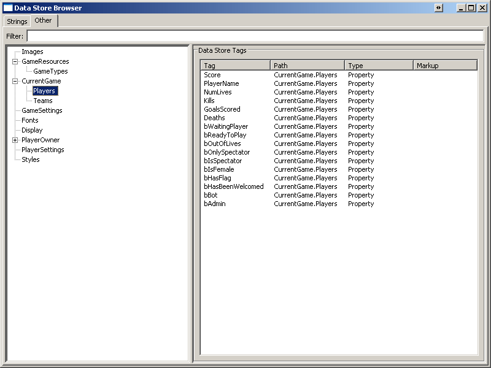

UDN
Search public documentation:
UIDataStoreKR
English Translation
?ユ��瑾�瑷�
涓?�界炕璇�
Interested in the Unreal Engine?
Visit the Unreal Technology site.
Looking for jobs and company info?
Check out the Epic games site.
Questions about support via UDN?
Contact the UDN Staff
?ユ��瑾�瑷�
涓?�界炕璇�
Interested in the Unreal Engine?
Visit the Unreal Technology site.
Looking for jobs and company info?
Check out the Epic games site.
Questions about support via UDN?
Contact the UDN Staff
UE3 ??/a> > ?��? ?疙��?����?れ? HUD > UI ?办��???�?レ�� ?����??
臧����
?办��???�?レ�� ?����?��? 瓴���� ???れ��???����??臧���� ?办��?半? 臁办�� 氚??����?�旮� ?���� 臧����?�瓿� ?����??氅�旎�?�歃�?����?? ??氍胳��?����???办��???�?レ�� ?����?���� 欤检�� 臧����瓿??����?�觳�毳??����?�瓿� ?办��???�?レ�� ?����?���� 甑���� ?����臧� ?措�魂�??�昊� 氇���� ?����???办��???����???���� ?淀�� ?疙��?����?る? ?�瓿�?����歆� ?る��?╇��??
??氍胳��(UDN ?����??氇���� 氍胳��?� 毵�彀�臧�歆�搿????�甑瓣��臧� ?����?????����?����. ?�氇�?����瓯半�� ?る��???�氤搓�� ?�瓯�??氇����???る��???����??瓴届�� ?����臧� ?����??氤�瓴届�� ?����?���� ??氍胳��?���� ?����???�氤�??臧�?����, ?����???���� ?����?膘�� ?���� ???����?����.
?╈��
- data store tag
- ?彪��???办��???�?レ�� ?胳��?挫�る�?瓿����?�瓴� ?�氤�?���� ?措��?����?? 氤错�� ?办��???�?レ��??臧��? 'Tag' ?彪�� ?�氤�?挫?毵?UUIDataStore::GetDataStoreID() 氅����?��? ??��?????����?����(?? ?绊??????����???措�� 氚����).
- 毵����??nbsp;?����??nbsp;(?���� ?办��??nbsp;?�?レ�� 毵����??
- ?办��???�?レ�� 毵����???����?鸽�� ?办��???�?レ�� ?����?� 瓿店��?��? UI???� ?����?����??彀胳“?���� 氚╈��?茧��, HTML ?�攴�?� ?����?�瓴� 氤挫��?����. 毵����??甑�氍�?� Markup Syntax??彀胳“?����?����.
- 臧�??nbsp;data ?�?レ��
- 臁挫��?��? ?����??歃??办��???�?レ�� ?措��?挫��?胳�� ?彪��?��? ?����) ?办��???�?レ�� 毵����???���� 旖����(?? Attributes ?办��???�?レ��)搿??胳��?���� ?办��???�?レ��?����??
甑���� ?����
?办��???�?レ�� ?����?����???办��???�?レ�� ?措��?挫��?? ?办��???�?レ��, ?办��??瓿店��?? ?办��??甑����??瓴����???膘�� 4臧�歆� 旮半掣 甑���� ?����臧� ?����?����. ?办��???�?レ�� ?����?����??臧?甑���� ?����????��???�???る��?� ?れ��瓿?臧����?����.
?���� 氚?齑�旮�??
?办��???�?レ�� ?措��?挫��???����???����?���� ?措��?る�� Engine.DataStoreClientClassName ?彪�� ?�氤�??臧���茧�?瓴办��?╇��?? 旮半掣?���茧�??����?���� ?办��???�?レ�� ?措��?る�� Engine.DataStoreClient ?措�� 瓴����??DefaultEngine.ini?���� [Engine.Engine] ?轨��??DataStoreClientClassName ?彪�� ?�氤� 臧���� 氤�瓴巾��??氚��? ???����?����. ???彪�� ?�氤�??臧���� 氍错��??瓴届��(瓿惦氨, DataStoreClient???���� ?措��?れ�� ?措��?��? ?���� 瓴届�� ?? ?�??旮半掣 ?办��???�?レ�� ?措��?挫��???措��?り? ?����?╇��??Engine.DataStoreClient). 甑����??DataStoreClientClassName ?� UEngine::InitializeObjectReferences() ??搿����?�氅�(?���� 搿���� ?る��?���戈�� ?���� ?���� 搿����?� ?疙��?���� ?�氍� 瓴届�� 欷??����) ?措��??彀胳“??Engine.DataStoreClientClass ?彪�� ?�氤�???�?ル��?����. ?办��???�?レ�� ?措��?挫��?鸽�� ?�歆� 齑�旮�??欷?UI 旎���鸽・���(UIInteraction)臧� UUIInteraction::InitializeGlobalDataStores() ???����?╇��?? ?错�� 耄���� ?疙��??於��??�氅�(?半��??臧�牍��? 旎����?���� ?����?��? ?����) ?办��???�?レ�� ?措��?挫��?胳�� ?彪��??氇���� ?���� ?办��???�?レ��(?れ�� ?轨�� 彀胳“)毳??���� 氚?齑�旮�?����?����.
?����
?办��???�?レ��?�??氇���� 齑�旮� ?���� ?����?� ?办��???�?レ�� ?措��?挫��?鸽? 瓯办��???╇��?? ?办��???�?レ�� ?措��?挫��?鸽�� ?办��???�?レ�� ?胳��?挫�� ?����, ???办��???�?レ�� ?彪��, ?�攴鸽�??淀�� ?彪��???办��???�?レ�� 瓴�?? ?彪��???办��???�?レ��???れ��???奠? ?���� ?膘�� ?���� 氅����?��? ?�瓿�?╇��?? ?办��???�?レ�� ?措��?挫��?鸽�� ?���� ?办��???�?レ��?� ?����?挫�� ?办��???�?レ�� ?膘�� ??臧�歆� ?办��???�?レ�� 氇╇��???��??╇��??
?���� ?办��???�?レ��
?办��???�?レ��??瓿店��?���� ?办��?瓣? ?轨�� ?����?挫�� 瓿����??瓴���� ?���� 瓴届�� ?���� ?办��???�?レ��搿?瓿����?╇��?? 毵??措��, 旌�毽�???措�� ?膘�� ?���� 瓴���� 毽����?れ? 臧�???疙��??瓴���� ?胳��???膘�� ?�瓴� ?办��?? ?���� 瓴���� ?���� ?���� ?膘�� ?���� ?办��?半�� ?���� ?办��???�?レ��臧� ?�瓿�?���� ?办��???����???����?����. ?办��???�?レ�� ?措��?挫��?戈? 齑�旮�?���� ?����(UDataStoreClient::InitializeDataStores()) GlobalDataStoreClasses 氚办��???����??臧??���� ?办��???�?レ��???���� ?胳��?挫�り�� ?����?�瓿�(?���� ?办��???�?レ�� ?彪��瓿?甏�?���� 歆�旃��? data store registration ?轨�� 彀胳“) ?错�� RegisterDataStore() 毳??胳��?���� ?办��???�?レ�� ?措��?挫��?胳�� ?彪��?╇��?? 臧??���� ?办��???�?レ��?���� ?标车?���� ?彪��???���� 瓿����???办��???�?レ�� ?�攴戈�� ?����???╇��?? ?标车?���茧�??彪��???����??瓴���� 膦�耄� ?�旯�歆� ?���� ?办��???�?レ��(旮半掣臧?臧� 氅�氇�毽���� ?�欤�?╇��?? ?���� ?办��???�?レ��??氇���� ?����?����???办��???�?レ�� ?措��?挫��?胳�� FindDataStore() 氅����?��? ?胳��?�瓿� ?����???办��???�?レ�� ?�攴鸽�??����?���� ?§��?ろ�� ???����?����.
?����?挫�� ?办��???�?レ��
?办��???�?レ��??瓿店��?���� ?办��?瓣? ?轨�� ?����?挫�� 瓿����??瓴���� 瓴届�� ?����?挫�� ?办��???�?レ��搿?瓿����?╇��?? 旎���鸽・��� 旮半掣 ?れ��, ?���� 氍搓赴 ?标臣 臧��? ?����?挫�� ?轨�� 甑����, 旃�甑� 氇╇�� ?膘�� ?�瓴� ?办��?? ?���� ?���� ?膘�� ?���� ?办��?半�� ?����?挫�� ?办��???�?レ��搿??�瓿�?���� ?办��???����???����?����. ?����?挫�� ?办��???�?レ��?� ?���� ?办��???�?レ�� ?����?���� ?れ��瓿?臧���� 毵れ�� 欷����??氇?臧�歆� 彀����?���� ?����?����.- ?����?挫�� ?办��???�?レ��???�歆� 齑�旮�???����???����?????����?挫�搓�� ?����???�毵� 毵����?挫��?����.
- ?����?挫�� ?办��???�?レ��??瓴���� ?�氇� ?���� 歆�?����歆� ?���茧�??����?挫�搓�� 瓴����?���� ?�瓯�?�氅�(?? 攵���� ?�氅� ?�瓴办��????氩�歆� ?����?挫�搓�� 搿�攴�?����?���� 瓴届��) ?措�� ?����?挫��???�??氇���� ?����?挫�� ?办��???�?レ��臧� ?彪�� ?挫��?�瓿� 攴胳�� ?半�� 臧�牍��? 旎����?���� ?����?╇��??
- 臧??����?挫��???�??臧??����?挫�� ?办��???�?レ��???���� ?胳��?挫�り�� ?����?╇��?? ?����?挫�� ?办��???�?レ�� ?�攴�???���� ?����?挫��???�???����?挫�� ?办��???�?レ�� 氇╇��?���� 瓿����?挫�� ?╇��??
- ?半��??臧??����?挫�措����� ?轨�� ?�攴戈�� ?���� ?办��???�?レ��臧� ?����?����. ?��? ?れ�� 'PlayerSettings' ?�攴戈�� ?���� ?����?挫�� ?办��???措��?る? ?彪��?�瓿� 瓴����?????����?挫�搓�� ?���� 瓴届�� 'PlayerSettings' ?�攴戈�� ?���� ?办��???�?レ�� ?胳��?挫�� 3臧��? ?�瓴� ?╇��?? ?措? ?淀�� 毵����???�攴戈�� 毽�臁鸽���? ?����???����?挫�� ?办��???�?レ��毳??����?���� ?�氤措�??����???���� ?���� ?����?挫�� ?办��???�?レ��???措��?���� ?办��???�?レ�� 毵����???�攴鸽�?臧����?�瓴� 毽�臁鸽����� ???����?����.
RegisterDataStore() 搿??����?���� ???胳��?挫�る�??����?挫�� ?办��???�?レ��搿??彪��?╇��?? ???����臧� PlayerDataStores 氚办��??於��??╇��?? ??氚办��?� ?�搿� ?����???����?挫��?� ?措�� ?����?挫��???����?挫�� ?办��???�?レ��???�??彀胳“毳??����?╇��?? ?办��???�?レ�� ?措��?挫��?戈?, ?����?挫�搓�� ?�瓯�?����?る�� ?奠?毳?氚���茧�?PlayerDataStores 氚办��??氚�氤�?���� ?�瓯�?���� ?����?挫��?� ?检��?���� PlayerOwner臧� ?���� ?����毳?瓴�?����?����. ?�瓯�???����?挫��???�??PlayerDataStoreGroup??彀眷�茧�??措�� ?����?挫��???�??氇���� ?����?挫�� ?办��???�?レ��毳??彪�� ?挫��?�瓿� PlayerDataStores 氚办��?���� ?����毳??�瓯�?╇��?? ?����?挫�� ?办��???�?レ��??氇���� ?����?����???办��???�?レ�� ?措��?挫��?胳�� FindDataStore() 氅����?��? ?胳��?�瓿� ?����?挫��???�??彀胳“?� ?����???办��???�?レ�� ?�攴鸽�??����?���� ?§��?ろ�� ???����?����.
UIDataProviderField.FieldType) 臧���茧�?歆�?����?����. ?���� ?办��???�?レ�� ?����?����??歆�?����???����?� ?����, 攵�???���� 氍胳��???膘�� ?���� ?����瓿? ?���� 臧? 斓����臧? 斓��?臧���茧�?甑����??氩���� 臧? ?办��??氚办��, 欷�觳� ?办��??瓿店��??氚办�� ?膘��?����(EUIDataProviderFieldType 氇╇�� 彀胳“).
?轨�� ?办��??瓿店��?����??歆�?����???办��???���� ?�攴� 氇╇��?� UI ?����?办�� ?办��???�?レ�� 敫����?办????����?���� ??��??瓴办��?╇��???办��???���� ?�攴鸽�??����???淀�� 氚����?╈�� ?����?????�瓴� ??. ?办��???���� ?�攴�???����?茧�� ?����?���� 瓴���措�??办��??瓿店��?��? ?����?���り�?臧�欤�?���� 氚╈��?茧�� ?����?????����?����. ?����??臧??办��??瓿店��???措��?る�� ?���� 臧�?ロ�� ?办��???���� ?�攴�??氇╇��???����?�旮� ?���� ?れ��??氅����?��? ?����?????����?����. ?茧? ?办��??瓿店��?���� ?措��?れ�� 甑����???彪�� ?�氤措�??����?���� ?�攴� 氇╇��???����?�氅�(?办��??瓿店��???措��???���� 瓴���� ???茧? ?るジ ?措��?? ???るジ 瓿店��?���� ?�搿�攴鸽��毹戈? defaultproperties??ini???����???措��??氚办��???����???���� ?����?����. ?���� ?办��???���� ?�攴鸽�??����旖����?���� ?办��??瓿店��?���� ?���� ???����?����. ?办��??瓿店��?��? 歆�?����???�攴� 氇╇��???����?���� 氚╇��?� ?办��??瓿店��?��? 瓿店��?���� ?办��??臧���� ?�?ロ��??氚╈��瓿??�旃�???半�� 瓴办��?╇��?? ?����?����氅?臧??办��??瓿店��?���� ?����??氚╈��?茧�� ?办��???���� ?�攴� 氇╇��???����?????�瓿� 氇���� ?办��??瓿店��?���� UI臧� ?措�� 瓿店��?��? 觳�毽�?���� ?办��?半? 彀胳“?���� ???����?????���� ?�攴� 氇╇��??UI???�瓿�?挫�� ?╇��??
?办��??瓿店��?���� ?办��??臧���� 瓴�??氚??����?????����?����. ?����?���� ?鸽��??�� ?����?� ?办��??瓿店��?���� WriteAccessType ?����?���� 瓴办��?╇��?? ???����??臧���� ACCESS_ReadOnly ??瓴届�� ?办��??瓿店��?��? 瓿店��?���� ?办��?半? ?����?????����?����.
?办��???�?レ��
?办��???�?レ��???办��???�?レ�� ?����?�瓿�???���� ?����???���� 斓����??瓿店�� ?疙��?����?れ��?����. ?办��???�?レ��???� ?����?���� ?办��???����??氇�毳搓����� 瓴���� ?办��?办? ?���� ?����?????�瓴� ?�氅� 彀胳“?� ?�氇� 甏�毽��? 旌§��?����???� ?����?���� ?る��?���� 彀胳“ 氤挫��, ?����??攵���检�? 齑�旮�?����歆� ?��? ?办��??氚?旮绊? 臧�牍��? 旎����?����??氅�氇�毽??╇�� 歃��?毳?齑����?���� 氍胳��???�???半��?��? ?�瓿�???����搿?�� ?办��?办? ?���� ?����?????����搿??╇��?? ?办��???�?レ��??氍胳��?? ?措?歆�, 旮半掣 ?����(?����, 攵�?? 攵�???����????, 氚办��, 甑�氍�, ?轨�� ?る��?���� ?膘�� ?����毵?臧�?ロ�� 氇���� ?����???办��?半? 觳�毽�?????����?����. ??氤奠��???����??瓴届�� ?措�� ?办��?半? ?�瓿�?����搿??り��???办��???�?レ��?���� 毵�於�?���茧�?觳�毽�?挫�� ?╇��?? ?办��???�?レ��???����???办��???����??甏�瓿����???办��?办�� 氚����?? 瓴�??氚?瓴����毳??���� ?疙��?����?る�� ?����?╇��??
?办��??瓿店��?���� 氇╈��?� ?轨�� ?���� 毽����?る�� 瓴����?����???る��?���� ?胳��?挫��???�???办��?半? 於����?���� 瓴���挫��毵??办��???�?レ��??欤茧�� ?� ?办��??瓿店��?���� 歆���� ??��???����搿??り��?����?惦��?? ?办��???�?レ��??甏�???办��??瓿店��?���� 攴鸽９???�??欷���� ?�旃�毳??�瓿�?���� ???����?���� 瓴���� 臧�???����?�氅� ?措�� ?���茧�?氤????����?半Μ 甑�臁�???措��?� 毵れ�� ?§��?�瓴� ?�臧�?????����?����. ?办��???�?レ��???����???办��??瓿店��?���� ?茧��?���� ?办��???�?レ�� ?����?����?� 毵�彀�臧�歆�搿? ?办��???�?レ��臧� ?�瓿�???办��???�?レ�� 毵����??氍胳��???����???���� ?�攴鸽�??����?���� ?§��?ろ��?����.
?办��???�?レ��?���� ?�甑� ?办��???�?レ��, ???办��???�?レ�� 氚??���� ?办��???�?レ�� ?膘�� 3臧�歆� ?����???����?����.
?�甑� ?办��???�?レ��???办��???�?レ�� ?措��?挫��?胳�� ?彪��?�氅� UI ??氇���� ???���� ?� ?����?????����???淀�� ?§��?ろ�� ???����?����. ?�甑� ?办��???�?レ��??毽����???办��??瓴���� ?���� ?���� 毵??る��), ?�瓴� ?办��???�瓴� 瓴���� ?胳��???�氤�), ?���� ?办��???? ?����, ?�臧� ?����) ?膘�� ?�氤措�?於����?╇��?? ?���� 氚??����?挫�� ?办��?半�� ?���� ?办��???�?レ�� ?措��?挫��???轨��?���� ?戈��???措��?る? ?�?ロ��氅?氇���� ?�甑� ?办��???�?レ��搿?臧�欤�?╇��??
?���� ?办��???�?レ��???轨�� UIScene???淀�� ?���� 氚??瓣舶?�氅� ?����???���� ?���� ?����???淀��?�毵� ?§��?ろ�� ???����?����. ?���� ?办��???�?レ��???���� ?胳�� ?����?���� ?����??臧�瓿� 臧��? ?�氤措�?於����?╇��?? 氤措�� 欷���� ?瓣舶???�???�氤�???�旮�???措��?????����?����.
?���� ?办��???�?レ��???れ��搿���� 臁挫��?��? ?���� ?办��???�?レ��?����?? 歃??办��???�?レ��毳??�攴�(毵����?���� ?淀��) 彀胳“???���� ?��?毵??措�� ?办��???�?レ��???措��?���� ?办��???�?レ�� ?措��?る�� ?����?����. ?����???���� ?办��???�?レ��??Attributes ?办��???�?レ�� ?����?����?? ???�?レ��???鸽��???����(?? 甑奠��, 旮办��?�昙� ????UI?���� ?����毵����???办��?办�� ?����?���� 旮半��???�瓿�?╇��??
?办��??甑����?���� ?办��???�?レ�� ?����?����???办��?半? 瓴�?����???る��?���鸽�??����?╇��?? 氚�氅� 瓴����?���� ?办��?半? ?办��???�?レ�� ?����?���� 瓴����?���� ?る��?����?����?? ?办��???�?レ�� 甑����?��? ?���る�??措��?り? Engine.UIDataStoreSubscriber ?疙��?����?れ�� 甑����?����???╇��?? ???疙��?����?る�� ?办��???�?レ�� ?����?����???办��?半? 瓴�?����?????����?���� 氅����?��? ?����?╇��?? 氚��?搿??办��???�?レ�� 瓴����?���� 瓴届�� ?措��?り? Engine.UIDataStorePublisher ?疙��?����???措��?る? 甑����?挫�� ?╇��?? UIDataStorePublisher ?疙��?����?る�� UIDataStoreSubscriber ?疙��?����?れ�� ?����?����?? ?半��??UIDataStorePublisher ?疙��?����?る? 甑����?���� 氇���� ?措��?る�� ?����?茧�� ?办��???�?レ�� 甑����?��? ?��?搿??措��??氅����?���� ?�昊� 甑����?挫�� ?╇��??
?办��???�?レ�� 甑����?���� ?办��???�?レ�� 氚����?╈�� ?淀�� 歆�?����???办��???���� 甑���� ?��? ?����?╇��??UIDataStoreSubscriber.UIDataStoreBinding). ??甑�氍�?� ?���� ?办��???���� ?�攴�???�???れ��???�氤措�?於����?�氅� ?办��???�?レ�� 彀胳“???�???办��???�?レ�� 毵����??氍胳��??毽�臁鸽�?ResolveMarkup, Un/RegisterSubscriberCallback), ?办��???�?レ��搿��???臧?瓴�??氚?瓴����(GetBindingValue/SetBindingValue)毳?旌§��?����?����. ?办��???�?レ�� 氚����?╈? 氇���� ?办��???�?レ�� ?����???����?????���茧�?氤错��?� ?����???办��???�?レ�� 氚����?╇�� ?����?��?毵??����??毵���� 毵���� ?���� ?����?����.
UIDataStoreSubscriber ?疙��?����?り? ?����?���� 氅����??欷??����??RefreshSubscriberValue() 氅����?����?����. ?办��???�?レ�� 氚����?╈�� ?����?����氅?氚����?╈�� 毵����??氍胳��?挫�� ?办��???�?レ�� 彀胳“??毽�臁鸽�? 甑����?���� RefreshSubscriberValue 氅����?��? 毽�臁鸽����� ?办��???�?レ��??甑����??旖�氚� 氇╇��??於��??��?搿??办��???����??臧���� ?����?�氅� 甑����?��? ?奠?毳?氚�瓴� ?╇��?? ?����???挫��?� Notifications 毳?彀胳“?����?����.
毵����??甑�氍�
- Settings
- PreferredWeapon
- Controls
- Sensitivity[2]
- InvertY
<Settings:PreferredWeapon> Controls ?办��??瓿店��?����??InvertY ?办��???�攴鸽�?彀胳“?���る�?毵����??氍胳��?挫�� ?れ��瓿??����?�瓴� ?╇��??
<Settings:Controls.InvertY>
. InvertY ?办��???���� ?�攴�??Controls ?措? ?办��??瓿店��?����?�毵� 歆�?����氙�搿?Controls ?办��??瓿店��?��? ?淀��?�毵� ?§��?ろ�� ???����?����. 毵����??氍胳��??<Settings:InvertY> ??
?����?��? ?����?����. Settings ?办��???�?レ��臧� PreferredWeapon 氚?Controls ?膘�� ???办��???���� ?�攴鸽�?歆�?����旮??�氍�?����??Sensitivity 氚办��??觳?氩�歆� ?����毳?彀胳“?���る�?毵����??氍胳��?挫�� ?れ��瓿??����?�瓴� ?╇��??
<Settings:Controls.Sensitivity;0>
(毵����??氚办�� ?���� ?鸽��?る�� 旖����?����觳���� 0旮半�� ?����??)
?措? ?办��??瓿店��?���� "氩����" ?���� ?�瓴� ?�氅� 毵����??氍胳��?挫�� ?れ�� ?鸽��???�?挫��???措�� ?措? ?办��??瓿店��?��? 歆�?����???办��???���� ?�攴鸽�??����?╇��?? ?��? ?れ�� ?れ�� 毵����??氍胳��?挫? ?标车?���茧�?毽�臁鸽�����歆� ?����?����. <Settings:Controls.PreferredWeapon>
"Controls" ?鸽��臧� ?����???����???れ�� ?鸽��臧� Controls ?办��??瓿店��?���� 旎����?ろ�鸽�??淀�� 毽�臁鸽�����?����.
旃错��瓿�毽�
?����(?���� 毽����?? ?办��???�?レ��
?���� ?办��???�?レ��??瓴���� ?ろ�� 欷?氤�瓴诫��歆� ?���� ?办��?半? 瓿店��?���� ?办��???�?レ��?����?? ?���� ?办��???�?レ��???茧��?���茧�??����?错��??臧���� ?办��???����??瓴����?���� 瓴���� ?����?��? ?����?����. ?����???办��?瓣? 攴茧掣?���茧�??����?搓赴 ?�氍�?����?? ?措��???办��???�?レ�� ?����?���� ?���� 臧�?ロ�� ?���� 氇╇��?� ?茧��?���茧�?氤�瓴诫��歆� ?����?����. ?措��???办��???�?レ��??氤错�� ?绊?????瓴����?����???る��?���� ?胳��?挫��?�???瓣��???�氇� 甏�毽��? 歆�?����??於��??���� 旖����毳??�甑�?��? ?�旮� ?�氍�??瓴����?����???れ��??臧����?╇��?? ?措��???办��???�?レ��???れ��瓿?臧��? ?办��?半? 瓿店��?╇��??- 旌�毽�???�氤�(?措��, 斓��? 瓯搓��, 瓿店博?? ?���� 臧�?ロ�� 氍搓赴, 氅����, ?ろ�� ??
- 毵??办��??臧�??毵? 毵??措��, 毵?歆�???����?挫��, ?る��, ?ろ��毽办�� ??
- ?��??���� 氍胳��??
- ?���れ�??���� ?�歆�???�???§��??
- Engine.UIDataStore_Strings(???办��???�?レ��臧� 歆�?����???����???����?办��???����??臧�?ロ��旮??�氍�???����?办��?????办��???�?レ��??臧�氤� ?办��???�?レ��搿?臧�欤�??
- Engine.UIDataStore_GameResource
?����(?���� ?����) ?办��???�?レ��
?���� ?办��???�?レ��??瓴���� 欷���� 氤�瓴诫��???办��?半? 瓿店��?���� ?办��???�?レ��?����?? ?���� ?办��???�?レ��???办��???�?レ��???╇��???半�� ?办��???����???����?错��??臧���� 瓿店��?���� 瓴���� ?����?�瓯�???����?��? ?���� ???����?����. ?措��???办��???�?レ�� ?����?���� ?���� 臧�?ロ�� ?���� 氇╇��?� ?茧��?���茧�?氤�瓴诫��歆� ?����?����. 瓴����?���� ?����?���� ?�攵�攵���� ?办��???�?レ��??氤错�� ?���� ?办��???�?レ��?措┌ ?措��???办��???�?レ��臧� ?����?���� ?办��??瓿店��?���� 瓯办�� ??�� 瓴���� ???る��?����???轨�� ?胳��?挫��?� ?瓣舶?╇��?? ?措��???办��???�?レ��???れ��瓿?臧��? ?办��?半? 瓿店��?╇��??- 瓴���� ?����(?瓣舶???����?挫�� ?? 臧�?ロ�� ?届��, ?��? ?�臧�, ?��? 氇╉�� ??
- ?����?挫�� ?����(?���� ?����, ?����, ?レ癌 氍搓赴, ?���� 歆���� ??
- ?�瓴� ?胳�� ?办��??臧�???����???胳��, 旃�甑� 氇╇��, ?瓣舶 ?�氤�, ?胳�� 瓴�??瓴瓣臣 ??
- 甑���� 臧�?ロ�� ?れ�� ?办��???? ?����?挫�� 旮半掣 ?れ��, ?胳��??旮半掣 ?れ�� ??
- Engine.UIDataStore_OnlinePlayerData
- Engine.UIDataStore_OnlineStats
- Engine.UIDataStore_OnlineGameSearch
- Engine.UIDataStore_Settings 氚?攴??���� ?措��??
- Engine.UIDataStore_GameState 氚?攴??���� ?措��??
氤�???办��???�?レ��
氤�???办��???�?レ��???办��???�?レ��臧� ?����?????���� ?���� 氇╇��???绊????����???����?���� ?办��???�?レ��?����?? ?措��???办��???�?レ��????�� ?办��???����???����?错��??臧���� 瓴����?����搿??����?�氅� ?茧��?���茧�??���� ??臧���� ?���� ?����?措��毳??���� "?ろ��?�旃�?����" 搿?瓿奠��臧� ?����?�瓯�?? ?办��???�?レ��臧� 瓿店��???办��???����臧� ?茧? ?缄??��? ?��? ?办��??歆����(?? ?轨�� ?措��?れ�� ?胳��?挫��)???措��?���� 瓴届�� ?���� ?办��?半? ?�?ロ��?????����?╇��?? 氤�???办��???�?レ�� ??- Engine.UIDataStore_Fonts
- Engine.UIDataStore_Images
- Engine.SceneDataStore
?办��???�?レ�� ?����
- ?办��???���� - 毹检? ???办��???�?レ��臧� 瓿店��???办��???����??瓴办��?挫�� ?╇��?? ???办��???�?レ��臧� ?���� ?办��?? ?���� ?办��???���� 臧�氤� ?办��?半? 瓿店��??瓴����?�旯�?
- 甑���� ?���� - ?れ��?茧�� ?办��???�?レ��??毂�氍措�?甑�攵�?���� 氚╇��??瓴办��?╇��?? ???办��???�?レ��臧� ?办��?办�� ?�??歆���� ?§��?る? ?�瓿�?╇��旯? ?���� ?办��??瓿店��???���� ??臧�歆�??臁绊��?茧�� 甑����?╇��旯? ???办��???�?レ��臧� ?茧��??毵��? ?办��??瓿店��?��? ?����搿??╇��旯? ???办��??瓿店��?���� 毂�氍�??氍挫��?����旯? ???办��???�?レ��臧� ?���� 毽����?? ?���� ?措��???����???���� ?胳��?挫�� ?���� ?���� ?措��???����???���� ?胳��?挫��???�???办��?半? 瓿店��?╇��旯?
- ?办��???���� ?����: ?れ��?茧�� ?办��???���� ?�攴�??氇╇��???����?���� 氚╇��??瓴办��?╇��?? ???办��???�?レ��??臧�???����??氚╇��?� 氍挫��?����旯? ?����旖���� 氇╇�� ?���� ?办��??旮半��???����?╇��旯? ?����??欷�觳� ?办��??瓿店��?��? 旮半��?茧�� ?����?茧�� ?����?╇��旯?
- ?�??/a>: ?れ��?茧�� ???办��?瓣? 瓿店��???办��?办�� 臧���� 臁挫��???�旃�毳??����?╇��?? ?办��???�?レ��(?���� 攴?瓿店��??臧� 臧??�觳措�??�?ロ��?�旯�, ?���� ?办��???�?レ��臧� 瓴����?����???る��?����???措��?れ��???措? ?措��臧�??臁挫��?���� ?办��?半? ?����???����?╇��旯?
- ?����: 毵��?毵���茧�??办��???����??氇╇��???����?����瓴??����?���� 氚╇��??瓴办��?╇��???? ?办��???�?レ�� 敫����?办????����). 欷�觳� ?办��??瓿店��?��? ?����??瓴届�� ?办��???�?レ��臧� ?����??欷�觳� ?办��??瓿店��?���� ?�???§��?る? ?�瓿�?���� ?�攴鸽�?瓿店��?╇��旯? ?办��???�?レ��臧� 欷�觳� 瓿店��?���� ?办��???����毳??�毵�?���� ?办��??瓿店��?��? ?����?����瓴??�氇�?����搿??挫�� ?╇��旯?
- ?措��???����: 毹检? ?办��???�?レ��?� 歆�???措��?る? ?����?╇��??
- ?彪��: ?れ��?茧�� ?绊??????����?����搿??办��???�?レ�� ?措��?挫��?胳�� ???办��???�?レ��毳??彪��?挫�� ?╇��??
- 氅����??/a>: 毵��?毵���茧�??办��???�?レ��臧� ?����?����搿?氅����?��? 甑����?挫�� ?╇��??
- ?����?????����: 毹检? ?办��???�?レ��??氇���� 氅����?��? ?�氚�毳搓�� ?����?����搿?臧����?�瓴� ?����?疙��?????����???����???���� ?れ��?╇��??
- ?���� 氚����??/a>: ?れ��?茧�� ?����???����???����???�??氚����?╈�� ?れ��?╇��??
?り��
?���� ?����1?�瓿�: ?办��???����
???�瓿�?����???措��?���� 歆����?????���� ?办��???�?レ��臧� 瓿店��???办��???����???╇��?? ?办��???�?レ��臧� 瓿店��???办��???����??瓴办��?�氅� ?办��???�?レ�� 甑���� 氚╇��, ?办��???�?レ��??defaultproperties 敫�搿�?���� ?れ��?挫�� ?���� 臧? 甑����??氅����???膘�� 瓴办��?���� ???��????╇��?? ?办��???�?レ��臧� 歆����???����??瓴届�� ?办��???�?レ�� ?措��?り? UIListElementProvider ?疙��?����?る? 甑����?挫�� ?╇��?? ?���� ?办��?半? ?����???办��???�?レ��??瓴届�� 甑����?��? ?办��??臧���� 氤�瓴巾�� ???����?�旯�? 臧�?ロ�� 瓴届�� ?办��???�?レ��??WriteAccessType 臧���� ACCESS_ReadOnly 臧� ?���� 臧���茧�??れ��?�瓿� 氅����?����SetDataField ?��?毽��? 甑����?挫�� ?╇��?? 臧�氤� ?办��?半? ?����?���� ?办��???�?レ��??瓴届�� UIDynamicFieldProvider (?���� ???措��?れ�� ?�觳� ?����)毳??办��???�?レ��???措? ?办��??瓿店��?�搿� ?����?挫�� ?╇��?? ???措��?る�� ?措? 臧�氤� ?办��???�?レ�� 旮半��??歆�?����?????����???����毳?甑����?�旮� ?�氍�?����??
2?�瓿�: 甑���� ?����
???�瓿�???办��???�?レ�� ?措��???り��???奠��?����?? ?办��???�?レ�� ?����?��? ?���挫�?瓴���� ?�旮� ?�氍�???办��???�?レ��毳?甑����?���� 氚╇��?���� ?���� ?奠��???����?����. ???�氍�???����??氇���� ?办��???�毽� ?����???����?????����???レ��???��?毵??��?搿??����??瓴疥��臧� 攵�臁表��旮??�氍�???����??歆�?����???����臧?氚╉��??瓴办��?���� 瓴���� ?措��?????����?����. ?办��???�?レ��(?���� ?办��??瓿店��??毳??り��???���� ?れ��瓿?臧��? 3臧�歆� 旮半掣 甑�臁半�??����?????����?����.- ?���� ?办��???�?レ�� - ?办��???�?レ�� ?�觳搓�� ?�觳� ?办��??瓿店��????��???�氅� 觳�毽�??欷�臧� ?�瓿�臧� ?����?����. ??甑�臁�?����???办��???�?レ��臧� 歆�?����??氇���� ?办��???����臧� ?办��?办�� ?措��?╇��?? ?办��???�?レ��??氇���� ?办��??臧���� 瓴�??氚?瓴����毳??措��?╇��??
- ?レ��
- ?����, 瓴�?? ?��? 甏�毽��? 臧����?╇��?? ???措��?れ��???办��???���� ?����, ?办��??臧?瓴�??氚?瓴����毳??����?��?搿?旖����毳??半ゴ瓿??��? 甏�毽����旮瓣? ?���� ?届��?����.
- ?����??- 氇���� ?办��???����臧� ?办��???�?レ�� ?�觳�???����?��?搿?毵����??氍胳��?挫�� ?办��??臧���茧�??����?���� ?�觳� ?�搿�?胳�り�� ?���� 牍�毽�?����.
- ?����
- ?るジ ?办��???�?レ��?���� ???办��???�?レ��??旮半��???����?╉�� 氚╇��???����?����.
- UI ?����?办�� ?办��???�?レ�� 敫����?办??���� 歆�?����???办��???����???办��???�?レ��??臧�???办��???���� ?����???措�� ?���� 甏�氩�?����瓴??????���� ?���� 氇╇��?茧�� ?����?╇��??
- ?╇�� ??甑�臁�???����?� ?��??���� 氍胳��?? ?措?歆�???�??歆���� ?§��??歃?瓴诫�� ?措��???����?���� ?措?歆� 彀胳“) ?标臣 臧���� 毵れ�� ?轨��???办��???����???����?���� ?办��???�?レ��??臧�???����?╇��??
- ?レ��
- 氤淀�� ?办��???�?レ�� - ???办��???�?レ��???����??欷�觳� ?办��??瓿店��?���� ?§��?ろ��???����?����?? ??甑�臁�?����??氇���� ?办��???����臧� ?措? ?办��??瓿店��?���� ?措��?�氅� ?措��???办��??瓿店��?��? ?れ�� ?办��?办�� ?�???§��?る? ?�瓿�?╇��?? ?办��???�?レ��???办��??瓿店��?���� ?���� 氚?甏�毽��? ?措��?�瓿� ?茧? 瓴届�� ?措�� ?����???�氇� 甏�毽���� 觳�毽�?╇��???鬼�� ?�氩� 氤�瓴届��?���� ?�毽�). ?办��???�?レ��??瓿店��?���� ?�觳� ?措? ?办��??瓿店��?��? 臧�瓯�??臧��? ?���� ???����?����.
- ?レ��
- 氇���� ?办��??瓴�??氚?瓴����??臧�氤� ?办��??瓿店��?����瓴??����?�氅� ?办��???�?レ��??旖����臧� 毵れ�� 臧����?�瓴� ?����?����.
- ?���� ?办��???�?レ�� "?办��" ?���� 甏�???办��?办�� 攴鸽９???§��?ろ�� ???����?����.
- ?�氍� 氚?毂�氍� 甑�攵�??毵れ�� 臧����?�瓿�, 旮办〈 ?措��?れ�� ?����?╈�� 歃��??�氅� ?��? 甏�毽?牍����??欷���� ???����?����.
- UI ?����?办�� ?办��???�?レ�� 敫����?办??���� ?办��?半�� ?轨�� ?办��???����毳??����?�瓴� 彀眷�� ???����搿?旃错��瓿�毽� ?���� ?����?╇��??
- ?����
- 於����?茧�� ?疙�� 於��??���� 臧���� ?��????�旮半��搿??措��???���� 氚╇��???错��?�旮� ?���� 旖���� 於����?????�瓴� ?�甑�?╇��??
- 甑����???���� ?措��?れ�� 瓯胳�� ?����?���� ?��? 甏�毽?欷?氩�攴戈�� 氚����??臧�?レ��???����歆����??
- UI ?����?办�� ?办��???�?レ�� 敫����?办??���� ?轨�� ?办��???����毳??����?���る�???毵��? ?措Ν???����?╇��??
- ?╇�� ??甑�臁� ?����?� '氅��? ?办��???�?レ��"???检��??毵��? 甏�???办��??攴鸽９???�???§��?る? ?�瓿�?���� ?办��???�?レ��??臧�???����?╇��?? ??甑�臁�???办��???�?レ��臧� 瓴����?����??甏�???措��?れ�� ?���� ?胳��?挫��???���� ?办��?办�� ?�???§��?る? ?�瓿�?挫�� ??瓴届��???����?╇��???? Engine.PlayerReplicationInfo). ?茧��?���� ?办��???�?レ�� 甑�臁�?����??
- ?レ��
- 臁绊�� ?办��???�?レ�� - ?办��???�?レ��????臧�歆� ?るジ ?����??臁绊��?����?? ?办��???���� 欷??茧????れ�� ?办��?半?, ?るジ ?����??欷�觳� ?办��??瓿店��?��? ?��??����??
- 攵�氇�????甑�臁�?���� ?るジ ???����???レ��瓿??����??氇���� ?���茧��搿??挫�� ?�?挫��???れ�� ?戈��?��? ?�瓴�?惦��??
- ?╇��: ??甑�臁�???���� 瓴����?����???措��?れ�� ?�???办��?半? ?����?���� 欷�觳� ?办��??瓿店��?���� 臧�???����?╇��?? ?�旮�??瓴����?����???措��?れ��???るジ ?办��??瓿店��???措��?る? 歆�?����???����??甑����??氤�?��? ?����?����. ?��? ?れ�� Engine.PlayerDataProvider ?措��?る�� Engine.PlayerReplicationInfo ?措��?れ�� ?办��??氚����???彪�� ?�氤措�?瓿店��?╇��?? Engine.TeamDataProvider ?措��?る�� Engine.TeamInfo ?措��?れ�� ?办��??氚����???彪�� ?�氤措�?瓿店��?╇��?? PlayerReplicationInfo ???����???办��??氚����?╈�� ?���� TeamInfo 氤�?��? ?����?╇��?? 攴鸽��???����?挫��???�???办��??瓿店��?��? ?淀�� ?����?挫��???�???�???办��??瓿店��?��? ?§��?ろ��??旮半��???�瓿�?�瓿�???���茧��搿?TeamInfo 氤�?���� ?办��??氚����???れ��?��? 於��??�瓿� PlayerDataProvider 臧� ?���� ?办��??瓿店��?��? ?���� 臁绊�� ?办��??瓿店��?��? ?����?惦��??
3?�瓿�: ?办��???���� 氇╇�� ?����
歆�?����???办��???����??氇╇��??甑����?���� 瓴��? 氤错�� 觳���� ???办��???�?レ��毳??����????臧�???逢��毽���� ?�瓿� 欷??����?����?? 攴鸽��??臧�???轨��?���� 攵�攵�毵� ?����?�瓿� ?�氅� ?�搿�?胳��?���� 臧�???���� ?�瓿�?搓赴???╇��?? 攴茧掣?���茧�?氚����?╇��歆� ?����?る�� ?���� ???�瓿�??觳����???茧��??齑����?���� 臧�?????����????瓴����?����. 歃?"歆�?����???办��???���� 氇╇��???措�魂�??����?╇��旯?" ?茧�� 歆�氍�???�??臧�???����???奠? "?����???�搿? ?� 牍����??瓴����?����. 氍茧�� 歆�氍�???����?�瓴�??攴鸽�れ�� ?��????��? ?���� ?奠��?����. ?半��??旮半掣?���� ?挫��??毹检? ?错�措炒瓿� "?����???�搿?臧� 氍挫��?胳? ?错�措炒���搿??�瓴�?惦��?? 臧����???办��???�?レ��毳??�搿� ?り��?惦��?? 歆�?����???办��???���� 氇╇��???办��??瓿店��?�搿�攵�??瓴�?����??氅����?����UUIDataProvider::GetSupportedDataFields() 氅����?����?����. ??氅����?���� ?���� 毵り�� 氤�?�搿� UIDataProviderFields 氚办��???�??彀胳“毳?旆����氅??办��??瓿店��?��? 歆�?����???办��???���� 氇╇��?茧�� ??氚办��??毂����?り�� ?����?╇��?? UIDataProviderField ???措��瓿??����?茧�� 甑����??甑�氍�?����???るジ ?����??FieldProviders ???����???���� 氍挫��??. ?办��??瓿店��?��? 歆�?����??臧??办��???����???�???措�� ?����???�攴�?� ?����???����?���� 氚办��???����???����毳?於��??╇��?? 氚办��??於��??���� ?办��???����???办��???�?レ�� ?�觳�?���� 歆�?����???办��???����?���� ?╇��?? ?�觳� ?办��???����毳??����?���� ?措? ?办��??瓿店��?��? ?����?���� 瓴届��?���� 毵�彀�臧�歆�?����?? 氇?臧�歆� ?�欤� 臧����???��? ?错�措炒瓴�?惦��??
毵れ�� 臧����?�瓿� ?轨��???办��???�?レ��毳?毵����?り�� 臧�?����瓴����?����. ???�?レ��???����??氇╈��?� ?���� 臧�毵� ?れ��???�??歆����?���� ?疥赴/?瓣赴 ?§��?る? ?�瓿�?���� 瓴����?����. 臧�毵�臧� ?����?���� ?れ�� 臧�毵� 臧��? UClient::DisplayGamma 搿? ???办��???�?レ��???�觳� ?彪�� ?�氤措�?臧�歆??����臧� ?����?����. ???����???办��???����毵?歆�?����氅????办��???����???�攴鸽�?"Gamma" 毳??����?�旮半�?瓴办��?����?����. ???办��???����??歆����???��??搓卑???措? ?办��??瓿店��?���� ?措��?��? ?���茧�??���� ?办��??臧���� ?��??措?搿????办��???����???����?� DATATYPE_Property ?���� ?╇��?? ???办��???�?レ��??GetSupportedDataFields() 氅����?���� "Gamma" ?�攴� 氚?DATATYPE_Property ?���� ?����??臧���� 氚办��???���� ?����毳?於��??╇��?? ?�欤� 臧����?╇��?? 攴鸽Μ瓿?- Engine.UIDataStore_Gamma ??旖����毳?歆���� ?����?���る�????办��???�?レ��???����???措? 臁挫��?╇��??
歆�?����???办��???���� 氇╇�� 甑����???���� ?����?茧�� ?るジ 氅����?��? ?����?���� ?るジ ?办��???�?レ��??旮�昙??办��???�?レ��(Engine.UIDataStore_Fonts)毳??错�措炒瓴�?惦��?? ???办��???�?レ��???����??毵����?���� ?����?���� 氍胳��??欷�臧�?���� 旮�昙挫�� 甑�觳�?????����搿??���� 氍胳��???����毵?旖����?���� ?����?╇��???? TestUIScenes.upk ?���れ��??TestFontScene 彀胳“). UObject毳??����?���茧�?彀胳“?���� ?����??氚╇��?� 瓴诫�� ?措��???����?���� 瓴���措��搿????办��???�?レ��臧� ?§��?る? ?�瓿�?���� ?办��?半�� 氅�氇�毽���� ?���� 氇���� ?����??UFont ?る��?����???�??瓴诫�� ?措��?����?? ?����??"臧??� ?����??氍胳��?挫�措��搿????����???����??DATATYPE_Property ?����?? ?半��??UIDataStore_Fonts::GetSupportedDataFields() 氅����?����??氅�氇�毽���� 臧?旮�昙??る��?����???�???����???办��???����毳?於��??�瓿� DATATYPE_Property 毳??办��???���� ?����?茧�� ?╇��??
毵��?毵���茧�?膦� ??氤奠��???办��???�?レ��???���� 臧�毵� ?办��???�?レ��(Engine.CurrentGameDataStore)毳??错�措炒瓴�?惦��?? ???办��???�?レ��?���� 瓴����??氇���� PlayerReplicationInfo 氚?TeamInfo ?る��?����???办��?半? ?�瓿�?���� ?措? ?办��??瓿店��?���� ??歆����???����?����(GameData ?����臧� 觳�毽�?���� 氚╇�� ?�氍�??歆�旮��? ?搓��??氍挫��?�瓴�?茧�� ?�欷�???���� ?���� ?轨��?���� ?る０ 瓴����?����). ????歆����???§��?ろ��旮??���� ?����?�旮半�?瓴办��???�攴�??臧�臧� "Players"?� "Teams" ?����?? ?办��??瓿店��?���� 歆����?措?搿????����???����?� DATATYPE_ProviderCollection ?����?? ?半��??UCurrentGameDataStore::GetSupportedDataFields() 氅����?����?????����[*GameData* ?���� ?���� ????毳?於���� 氚办��??於��??╇��?? 觳?氩�歆� ?����???�攴�??"Players" ?搓�� ??氩�歆� ?����???�攴�??"Teams" ?����?? ?办��??瓿店��?��? 歆�?����???办��???����???措��?���� GetSupportedDataFields 氅����?��? ?淀�� 於��??��?搿??�旮�?���� 攴?於��????�???�瓴� ?办? ?����?����. 攴鸽��???�旮�??於��??���� ?�氤搓�� ?����?╇��?? 氚�搿� ?���� 氍挫��?���� FieldProviders 甑����?���� ?�??瓴����?����. UIDataProviderField ?办��???���� ?����??DATATYPE_Provider 臧� _DATATYPE_ProviderCollection_?茧�� ?れ��??瓴届�� FieldProviders 氚办��???措�� ?办��???����?���� ?����?���� ?办��??瓿店��???胳��?挫��???�??彀胳“毳??����?挫�� ?╇��?? ?办��???����??_DATATYPE_Provider_(?���� ?办��??瓿店��???����)??瓴届�� 氚办��?� ?����???����毵??����?╇��??
UCurrentGameDataStore::GetSupportedDataFields() ??旖����毳??错�措炒氅� ?挫��???���� ?����?????����?����. 歃??����?办�� ?����歆� ?��????半�� ?るジ 搿�歆�??臧�瓴� ?╇��?? ?�觳� ?办��???�?レ��毳?毵���� ?���� ?挫�� ?����?挫�� ?╇��?? ?���� ?戈��??瓴�觳�???���� ?����??DATATYPE_Provider ?���� DATATYPE_ProviderCollection ???办��???����毳?於��????���� 臧??办��???����???�??FieldProviders 甑����?���� ?�???����???����???����???办��??瓿店��???胳��?挫��???�??彀胳“毳??����?挫�� ?╇��?? 攵����?���� CurrentGameDataStore ?���� 氚╈�� ?�氍�??"player" 氚?"team" ?办��??瓿店��?���� 瓴����?���� PlayerReplicationInfo ?���� TeamInfo ?№�瓣�� ?����?���� 瓴届��?�毵� ?����?╇��?? ?措��???る��?���戈�� ?����?办��???����?��? ?���茧��搿?UI ?����???���� ?����??FieldProviders 甑����?���� ?ｌ�� 瓿店��?���� ?胳��?挫�り�� ?����?����. 攴鸽��氅??措�魂�??挫�� ?�旯�?? 氍胳��??UCurrentGameDataStore::GetSupportedDataFields() ???轨�� 旖����臧� ?措��?����?���� 氚╇��?����?? ?����?办��?���� ?����???措��???办��??瓿店��?�搿�攵�???措�� ?办��?半�� ?����?��? ?�瓿� ?办��???�?レ�� 敫����?办????鸽Μ 氤搓赴毳??����?????����搿??措��??歆�?����???办��?办�� 氇╇��毵??����?╇��???���� ?办��???ろ�る�?. ?措? ?����?���� ?れ�� ?胳��?挫�� ?�???措��?���� ?办��??瓿店��???措��?れ�� ?措��??旮半掣 ?る��?���鸽�??����?���茧����� "DATATYPE_Provider/Collection???办��??瓿店��???胳��?挫�り�� ?����???����" ???�甑� ?����??毵�臁�?????����?����. ?措��瓴??�氅� ?办��??敫����?办? 旖����臧� "Players" 氚?"Teams" 歆����???措��?���� ?办��??瓿店��?��? 炜茧Μ?���� ?措��???措��?れ�� ?胳��?挫�る�??����?��? ?�瓿�???����?办��??歆�?����???办��???����毳?臧�?胳�� ???����?����.
彀戈��: ?���� UCurrentGameDataStore::GetSupportedDataFields() 氚?UCurrentGameDataStore::GetFieldValue() ??瓴���� 欷���� "Players" 氚?"Teams" ?办��???����毳?觳�毽�?��? ?����?����(歃?GIsEditor == FALSE??瓴届��). ?搓��?� ?措�� ?����??氩�攴�?措?搿????����?���� ?措? 瓯措��?瓣��?惦��??
?れ�� ?�瓿�???办��???�?レ�� ?办��???����???れ�� 臧���� 臧�?胳��???�旃�毳?瓴办��?���� 瓴����?����. ?办��???�?レ�� ?����?���� 觳���� ?���� ?���� ???�瓿� ??�� 毵れ�� ?逢��毽诫��?? 歆�?����???���� 氇╇�� ?����???���� 氅����?�觳�???办��???�?レ�� 臧���� ?�??氚?瓴�?���� ?����?���� ?�旃�臧� ?����?茧�� ?����?����??毵?攴鸽?搿?氇���� ?�旃�臧� 臧�?ロ��旮??�氍�?����?? 3?�瓿�?����??氇?臧�歆� 旮办〈 ?办��???�?レ��臧� 歆�?����???办��???����??氇╇��???����?���� 瓴���� ?����?����?����. ?�旃�毂����???���� ?��?毵?臧??办��???�?レ��臧� 瓿店��?���� ?办��?办�� ?�旃�???����???る��?����. ?�觳� ?办��???�?レ��毳??����???���� ?办��?半? ?措��???�?ロ�� ???����?����. 攴鸽��???办��?半? ?�觳�?���茧�??�?ロ��歆� ?���� ?措��臧�??臁挫��?���� ?办��?半? ?����??彀胳“?��? ?��?毳?瓴办��???���� 氇?臧�歆� 歆�旃���� ?����?����. ?办��?半? 甑�觳� ?办��???���� 於���� ?办��???膘�� ??膦�毳� 欷??����???���� 瓴���茧�?臧�欤�?���� 瓴���� ?����?╇��?? 甑�觳� ?办��?半�� 甑�攵�???�???�旃�臧� ?���� ?办��?办��?����. 甑�觳� ?办��?办�� ?�搿�??甑����??氤�?���� ?�?ル�� ?办��?半? ?????����?����. 於���� ?办��?半�� 甑�攵�???�???�旃�臧� ?���� ?办��?半��, ?�彀�?���� 氚╇��???淀��?�毵� ?办��?办�� ?§��?ろ�� ???����?����. 於���� ?办��?办�� ?�搿�??氅�氇�毽???氇���� 旮�昙??る��?����??瓴诫�� ?措�� ?���� ?��??���� 氍胳��?挫�� 臧����?����. ?��??���� 氍胳��?挫�� 甑���� 旌����???���� ?����?茧�� ?れ�� ?办��?半�� ?����?���� ?���� 瓴���措��搿??措? 於����?茧�� 臧�欤�?╇��?? ?轨�� ?��??���� 臧??���� 甑���� 臧���� 甑���� 旌����??旌����?����??氤挫��???���茧��搿???�� ?§��??氅����??氚??§��??氅����?��? 毹检? ?����?�搿�攵�???办��?半? 搿����?挫�� ?????����)毳??����?���� ?办��?半? 瓴�?����???╇��??
瓿店��???办��?瓣? 於���� ?办��?办�� 瓴届�� 氤错�� 臧���� ?��? ?�?ロ��歆� ?���� ?胳�� ?����?����. ???办��?瓣? ?�彀�?���茧�??����?��?搿?氤错��?� ?办��??臧���� 旌����?��? ?����?����(?? ?办��???�?レ�� ?胳��?挫��??甑����??氤�?���� ?�??. ?办��?半�� 氤胳��?���茧�??����?���� ?�臧�???措? ?る��??瓴���� ???���� 臧���� ?����?�旮� ?�氍�?����?? ?半��??於���� ?办��?办�� ?�???�???�旃� ?����???����?��? ?���� ?���� ?����?����. 甑����?��? ?措��???办��???���� 欷??����??臧���� ?�觳�??瓴届��(GetDataStoreValue() ?胳��) ?办��?半? ?����?���� ?�彀�毳??ろ��?���� 甑����?��? 臧�??斓���� 氩����??臧���� 臧����搿??╇��?? ?挫�� ?�搿� ?���� ??甑���� 旌����?���� ?��??���� 臧??���� 甑���� 臧���� 瓴�?����??UUIConfigSectionProvider::GetFieldValue() 氅����?��? ?错�措炒瓴�?惦��??
甑�觳� ?办��?半? 瓿店��?���� ?办��???�?レ��毳??����???���� ???办��?瓣? 瓯办�� ??�� ?措? ?措��臧�???�?ル��???���茧�??办��???�?レ��/瓿店��?��? ?挫�� ?�???§��?る��???�瓿�?╇��?? ??瓴届�� ?办��???�欤� ?�旃�毳?瓴办��?�旮� ?���� 氇?臧�歆� 於��??���� 瓿���� ?����???����?����. 觳?氩�歆� 歆�氍�?� ???办��?瓣? 瓴����?���� 彀胳“?���� 氚╇��瓿?氩����毳?瓴办��?���� 瓴����?����. ?办��?瓣? 旖���� ???���� 歆�?����??歆���� 彀胳“??瓴届�� ?办��?半? 攴鸽?搿??�瓿� ?办��???�?レ��??旮办〈 ?�旃�???办��?半? 彀胳“?�瓴� ?���� 瓴���� 臧�??膦��? 氚╇��????瓴����?����. ?办��?瓣? 氇�氇� ?�旃�?����毵?彀胳“?�瓯�???§��?��? ?����?���� ?办��?办�� ?§��?ろ�� 瓴届�� ?るジ 瓿���� ?����???����?����. ???办��???�?レ��??甑����?��? ???办��?半? ?措�魂�??����?����臧�?����?? ?办��?瓣? 欤茧�� 氅����?���� ?����?����歆�(?? 瓴���� ?���� 毵??る��) ?���� 瓴���� 欷���� ?����?����歆� 瓴办��?╇��???? 瓴���� ?���� ?办��??. ?办��?瓣? 欤茧�� ?����???���� 氅����?���� ?����?�瓿� ?办��?办�� ?���� ?�旃�臧� 毵��? 旎����??彀胳“毳??����?���� ?措��???���� ?���� 瓴届�� ?办��?办�� ?�旃�毳??办��???�?レ��搿???赴瓿??�旮�?���� 瓴�?����?�搿� ?挫��??旮办〈 彀胳“毳?臁办��?���� 瓴���� ?����?����. ?措��瓴??�氅� 氘ろ��?错�� ?る��瓿?臧��? ?����???办��??攵�攵�毵�??瓴�?����旮??���� ?����???���� 氅���搓�� ???措��?る? 搿����?��? ?����???╇��?? 氘ろ��?错��(?���� ?����????��) ?措��?る�� ?绊??????办��?半? 彀胳“?挫�� ??瓴届�� ?办��???�?レ�� ?����?����?????办��?半? 臧����?�瓴� 瓴�?���� ???���茧�?攵�?����???����?����.
?����???办��???�?レ�� ?措��?り? 瓿店��?���� 甑�觳� ?办��?瓣? ?�歆� ?措��臧�???�?ル��歆� ?��? 瓴届��?���� 甑����??臧���� ?办��???���� 瓿店��??臧���� 於��??���� ?办��??臧���� ?����?����搿??���� 瓴���� 臧�??臧����??瓴����?����.
5?�瓿�: ?����
?����?� ?办��???�?レ��???办��???����臧� UI ?����?办�� ?办��???�?レ�� 敫����?办????����?���� 氚╇��??毵����?����. ?办��???�?レ�� 敫����?办????办��???�?レ��??欷�觳� 瓿店��??瓿�旄� 甑�臁半�??����?���� ?鸽Μ 氇╇��???���� ?检�� ?����瓿? ?����???办��???�?レ��???办��??瓿店��?����??歆�?����???办��???����毳??����?���� ?るジ飒??���� ?膘�� ??臧�歆� ?����???����?╇��?? DATATYPE_Provider ?���� DATATYPE_ProviderCollection ??FieldType ??臧���� ?办��???����???るジ飒??����???����?���� 瓴�瓿� ?�昊� ?办��???�?レ��???���� ??��?茧�� ?����?╇��?? ?れ�� ?ろ��毽办��??彀胳“?����?����.- ?办��???�?レ��???办��???���� 氚?欷�觳� 瓿店��??

- 欷�觳� ?办��??瓿店��?���� ?办��???����

GetSupportedDataFields() 氅����???胳�� ??欷�觳� ?办��??瓿店��?���� ?�??氤错�� DATATYPE_Provider??FieldType 臧� ?���� ?办��???����毳?於��??�瓴� ?╇��?? ?办��??瓿店��?��? 於����?���る�??办��??瓿店��?���� ?�???办��???����毳?於��??�旮� 氤措�� ?办��??瓿店��?����??歆���� GetSupportedDataFields() 毳?於��??╇��?? 攴鸽��氅?氇���� ?����毳?於���� 氚办��???����搿?於��??���� ?胳��?��? ?措�� ?办��???����臧� ?办��???�?レ�� ?�觳�???���� 瓴�觳�???�旮�?�搿� ?╇��?? 攴鸽��???措��瓴??�氅� ?办��???�?レ�� 敫����?办??���� ?办��???�?レ��???����搿???氩? 攴鸽Μ瓿?欷�觳� ?办��??瓿店��?���� ?����搿???氩??? ??氩??����臧� ?����?��????����旯����? ?����?� 攴鸽��歆� ?����?����. ?���� DATATYPE_Provider/Collection ?办��???���� 於��??���� ?戈��??瓴�觳�??欷�觳� ?办��??瓿店��?���� ?�??彀胳“??瓿店��?����???╇��?? 攴??挫�� 欷??����???办��???�?レ�� 敫����?办?(氚?GetSupportedDataFields() 毳??胳��?���� ?るジ 旖����)臧� UIDataProviderField 甑�氍�??FieldProviders 甑����?���� ?����?���� 欷�觳� ?办��??瓿店��?��? 歆�?����???办��???����??氇╇��???措��?措��?����. 瓿店��?���� ?�???办��???����毳?於��??��? ?���茧��搿??半��??欷�觳� 瓿店��?���� ?�??彀胳“毳??�瓿�?��? ?����) ?办��???�?レ�� 敫����?办?臧� 欷�觳� ?办��??瓿店��?����??GetSupportedDataFields() 毳??胳��?��? ?����?����.
甑����
1?�瓿�: ?措��???����
甑����??觳??�瓿�???�氇� 攴鸽?搿����?����. ?办��???�?レ��臧� 欷�觳� ?办��??瓿店��?��? ?����?��? ?��?毳??措? 瓴办��?���茧��搿????����?����???措��?る? ?����?�旮半�??�氅� ?╇��?? ?办��???�?レ��???�??UIDataStore ?���� 歆���� ?����?��? ?���� ?轨�� ?办��???�?レ�� ?措��??欷??����?���� ?����?���� 瓴���� ?����歆� 瓴办��?挫�� ?╇��?? 臧??办��???�?レ�� ?措��?る�� 毵れ�� ?轨��?��?搿?氤错��?� ?�觳� ?办��???�?レ�� ?措��??攴鸽９???�???����?����?��? 甑�於�?��? ?���� ??UIDataStore ?���� 歆���� ?办��?半? ?����?�瓴� ?╇��???办��???�?レ�� ?����?����?���� ?���� UIDataStore_OnlineGameSearch ?措��??氚?攴??���� 彀胳“). ?办��??瓿店��?����???るジ 瓴届�瓣�� ?����?����. ?办��???�?レ�� ?措��?れ�� 毵れ�� ?����?????���� 旮半��???����?���� ?���� ?办��??瓿店��???措��?り? ?���茧��搿??�觳�?���茧�??����?�旮� ?���� ??氇����???奠��?挫???瓴���� ?���� ???����?����. 欤检�� ?办��??瓿店��???措��?れ�� 臧����??Data Provider Reference? 毳?彀戈��?����?����. ?办��???�?レ�� 氚??办��??瓿店��???措��?る? 毵���� ?����???�氚�毳??����??氤挫��?�旮� ?���� ?����??氇?臧�歆� ?彪�� ?�氤搓�� ?����?����. UUIDataStore::Tag: 臧�??毹检? 甑����?挫�� ??瓴��? ?办��???�?レ��???�攴�?����?? ?办��???�?レ��???�攴�???办��???�?レ�� 彀胳“毳??���� ?办��???�?レ�� 毵����?����???����?????���� ?措��?����?? ?办��???�?レ��???�攴�??氤错�� 氤�瓴届�� ?����?��? ?����?����. ?措��?れ�� defaultproperties 敫�搿�?���� Tag 臧���� 臁办��?�旮半�??�氅� ?╇��?? ?办��???�?レ��???�攴戈�� ?����?搓卑???措�� ?���茧�??绊??????れ��??瓴届��UUIDataStore::GetDataStoreID() 氅����?���� 臧���� ??��?���� ?办��???�?レ�� ?�氤�???����?���� ?�攴鸽�?氚����?????����?����.
UUIDataProvider::WriteAccessType: ???彪�� ?�氤�???办��???�?レ��???办��??瓿店��?���� ?办��???����毳??绊??????���� 臧�?ロ��歆� ?��?毳?瓴办��?���� ???����?╇��?? 旮半掣臧��? ACCESS_ReadOnly 搿? ?办��??瓿店��?���� ?措�� ?����??氤�瓴届�� ?����?��? ?����???��??╇��?? ?办��??瓿店��???���� ?办��???�?レ�� ?措��??欷���� ?办��???�?レ��???�???办��??瓴����毳?歆�?����???措��?り? ?���� 瓴届�� ??臧���� ACCESS_WriteAll 搿??れ��?????����?����.
?���� ?����?????办��??瓿店��?���� ?半�� ?办��??瓿店��???措��?れ�� ?�氚�毳??����???���� ?����??於��??���� ?彪�� ?�氤搓�� ?���� ???����?����. ?措��???彪�� ?�氤�??Data Provider Reference? ?���� ?る９?����.
2?�瓿�: ?彪��
?办��???�?レ�� ?措��?る? ?����???����???绊??????���� 氚?齑�旮�?����?�搿� ?办��???�?レ�� ?措��?挫��?胳�� ?彪��?挫�� ?╇��?? ?���� ?戈��??瓴�觳�???办��???�?レ�� ?����?� ?���� ?办��???�?レ��?� ?����?挫�� ?办��???�?レ�� ?膘�� ??臧�歆�?����?? ?彪�� ?�搿�?胳��??氇���� ?����?╇��?? ?彪��???���� ?办��???�?レ��??氇╇��?� ?办��???�?レ�� ?措��?挫��?胳�� GlobalDataStores 氚办��???�?ル��?����. ?�搿�???���� ?办��???�?レ��毳??彪��?���る�??办��???�?レ�� ?措��?れ�� 瓴诫�� ?措��??瓴���� DefaultEngine.ini??[Engine.DataStoreClient] ?轨��???���� GlobalDataStoreClasses 氚办��??於��??挫�� ?╇��???����??歆�???办��???�?レ�� ?措��?挫��?鸽? ?����??瓴届�� ???����毳??措�� ?措��?れ�� ?轨��??於��?). ?��? ?れ�� ExampleGame?���� Fonts ?办��???�?レ��毳??彪��?���る�??れ�� ??��??ExampleGame/Config/DefaultEngine.ini ?����??[Engine.DataStoreClient] ?轨��??於��??挫�� ?╇��?? +GlobalDataStoreClasses="Engine.UIDataStore_Fonts".
?彪��???����?挫�� ?办��???�?レ�� ?措��?れ�� 氇╇��?� ?办��???�?レ�� ?措��?挫��?胳�� PlayerDataStoreClasses 氚办��???�?ル��?����. ???����?挫�� ?办��???�?レ�� ?措��?る? ?彪��?���る�??办��???�?レ�� ?措��?れ�� 瓴诫�� ?措��??瓴����??DefaultEngine.ini???���� [Engine.DataStoreClient] ?轨��?���� PlayerDataStoreClassNames 氚办��??於��??╇��?? ?���� ?办��???�?レ�� ?措��?り? ?彪��?���� 氚╈��瓿??����??臧����?����.
?挫�� ???办��???�?レ�� ?����?����??甑�觳�?���� 攵�攵���� ?����?╇��?? ?办��???�?レ��?� 瓿店��???措��?る? ?����?�瓿� ?办��???�?レ��毳??彪��?���茧��搿??办��???�?レ�� ?����???����??氅����?��? 甑����?挫�� ?╇��?? ???轨��?����????氅����?���� 觳���� 氚���� ?办��???�?レ�� ?措��?れ��??歆�?����???办��???����?�???奠��瓿?甏�?���� 氅����?��? ?る９?����. ?办��???�?レ�� ?����?���� ?り��????氇╉�� 欷??����??旮半掣 ?措��?れ��??臧�?ロ�� 毵��? ?����???����?���� ?���� ?措��?り? ?办��???�?レ��???办��??瓿店��?���� ?�觳� 旮半�� 欷??茧?攵�毵�??甑����?����搿??���� 瓴����?����.
毹检? ?办��???�?レ�� ?措��?れ��????��?���� ?���� ?����?���� 氅����?��? ?错�措炒瓴�?惦��?? ?れ��?茧�� 毵れ�� ?�欤� ??��?瓣�� ?���� ?����?���� 氅����?��? ?错�措�����?? 毵��?毵���茧�?瓯办�� ??��?办? ?���� ?����??氅����?��? ?错�措�����?? ?リ芳 甏����???れ�搓�?氅����???措��?� UnrealScript 氅����?���� ?措��?╇��?? ?���� 氅����??br /> ?れ�� 氅����?���� 氇���� ?办��???�?レ�� 氚??办��??瓿店��?����??甑����?����???╇��?? ???����肟����?����.-
UUIDataProvider::GetSupportedDataFields()- ??氅����?���� ?办��??瓿店��?��? 歆�?����???办��???����毳?瓴办��?���� ???����?╇��?? ?办��???����臧� ?���� ?办��??瓿店��?���� ?���� ???���茧��搿?氇���� ?办��??瓿店��???措��?る�� ??氅����?��? 甑����?�瓴� ?╇��?? ?办��???�?レ�� 敫����?办??���� ?办��??瓿店��?��? ?轨�� ?����毳?歆�?����歆� ?��?毳?瓴�歃���� ???るジ 氅����?��? ?�昊� ?办��??瓿店��?��? 歆�?����???����毳??����?���� 旎���鸽�??����???���� ?胳��?╇��?? ??��Super::GetSupportedDataFields()毳???氅����???胳��GetSupportedScriptFields()?措菠?胳�� 旮半掣 甑����?茧�� ?胳��?���� 牍����???办��??瓿店��?��? ??氅����???����???����?????���� 旮绊��毳??�瓿�?╇��??
?れ�� 氅����?���� ?办��???�?レ��???办��??瓿店��???措��?れ��????��?瓣卑????��?办? ?����???���� 氅����?����?����. 毹检? ?茧��?���茧�???��?半�� 氅����?��? ?る（瓴����?����.
-
UUIDataProvider::GetFieldValue()- ??氅����?���� ?办��???����???�???れ�� ?办��??臧?瓴�?���� ?����?╇��?? ?办��??瓿店��?��? ?�觳� ?彪�� ?�氤� ?办��???����毳?臧���� 瓴届��?�毵� ??氅����?��? 甑����?╇��?? 歃??办��??瓿店��?���� ?办��???�?レ��??氇���� ?办��???����臧� 欷�觳� ?办��??瓿店��?���� ?措��?���� 瓴届�� ??氅����?��? ?����?��? ?����?����. ?�觳� ?办��???�?レ��??GetDataStoreValue()氅����?�搿� ?胳��?╇��?? -
UUIDataProvider::SetFieldValue()- ??氅����?���� ?办��???����???�???れ�� ?办��???�旃�???����?错��??臧���� 瓴����?���� ???����?╇��??GetFieldValue()氅����?�觳�????氅����?���� ?�觳� ?彪�� ?�氤� ?办��??臧���� 臧���� ?办��??瓿店��?����毵??����?╇��?? ?�觳� ?办��???�?レ��??SetDataStoreValue()氅����?�搿� ?胳��?╇��?? -
UUIDataProvider::GenerateFillerData()- ??氅����?���� UI ?����?办��?���� 氙鸽Μ 氤搓赴毳??���� 臧�牍��? ?办��?半? 瓴�?����?????����?╇��??GetFieldValue()氅����?��? 甑����??瓴届�� ??氅����?��? 甑����?挫�� ?╇��?? ??氅����?���� ?���� ?措��?���� ?胳��?��? ?��?毵??����搿??����?办��??甑����?��? ?胳��?╇��?? ??氅����???胳��??旮半掣 甑����?�GenerateFillerData()?措菠?鸽? ?胳��?���� 牍����???办��??瓿店��?��? ??氅����???����???����?????���� 旮绊��毳??�瓿�?╇��?? -
UUIDataStore::InitializeDataStore()- ??氅����?���� 氇���� 膦�毳�???���� ?���� 齑�旮�??旖����???����?????����?����. ??氅����?��? 甑����?挫�� ?���� ?����?� 毵れ�� ?れ��??瓴����?����. 臧�???茧��?���� ?����?� ?�氇�???办��???�?レ��???�氇�瓿??瓣舶???办��??瓿店��?��? ?����??瓴届��?����??歃??办��???�?レ��?� ?����???���� 氚??�旮�??. ??氅����?���� ?办��???�?レ�� ?彪�� ???办��???�?レ�� ?措��?挫��?戈? ?胳��?╇��?? -
UUIDataStore::OnRegister/OnUnregister (UIDataStore.Registered/UnRegistered)- ??氅����???��? 齑�旮�???���� 氚?斓�膦� ?�毽� 旖����???����?╇��?? ?办��???�?レ��臧� ?彪�� 氚??彪�� ?挫��?????办��???�?レ��?���� ?胳��?╇��?? ?措��???措�� ?ろ��毽巾��???措��??氅����?���� ?§��?ろ��???办��???�?レ��?�毵� ?ろ��毽巾�鸽�??�瓿�?╇��?? -
UUIDataStore::ResolveListElementProvider()- ??氅����?���� UIList???����毳??�瓿�?????���� ?る��?����???�??彀胳“毳?臧�?胳��?????����?╇��?? ?办��???�?レ��??欷�觳� ?办��??瓿店��??欷??����臧� 歆����???办��???����毳?臧���� 瓴届�� ??氅����?��? 甑����?挫�� ?╇��?? 氚����???る��?����????氅����?���� 毵り�� 氤�?��? ?检��?���� FieldTag 臧� ?���� ?办��???����毳??����?���� ?办��??瓿店��?����???╇��?? 氇�氚�?????る��?����??UIListElementProvider ?疙��?����?る�� 甑����?挫�� ?╇��?? ??氅����?���� ?办��??氚����?╈�� ?标车?���茧�?毽�臁鸽����� ??UIList?���� ?胳��?╇��?? -
(UIDataStore.NotifyGameSessionEnded)- ??氅����?���� ?�氩� ?����???���� 氚����?挫�� ?���� ?�毽�毳??����?���� ???����?╇��?? ?办��???�?レ��??瓿店��?��? ?№��???�??彀胳“毳?臧���� 瓴届�� ?措��??彀胳“搿??疙�� ?���� ?戈��臧� ?�氩� ?���� 欷?臧�牍��? 旎����?����歆� ?���� ???���茧��搿???氅����?��? 甑����?挫�� ?????����?����. ??氅����?���� ?�觳�NotifyGameSessionEnded氅����?��? ?胳��????DataStoreClient?���� ?胳��?╇��?? ??氅����?����=UWorld::CleanupWorld()==??=GameViewport->eventGameSessionEnded()???�???胳��?���� ?����??氅����?���� 旮?觳挫�� 欷??茧??����??
?措��??氅����?���� ??��?半�� 瓴届�瓣�� 瓯办�� ?����?����. 毵れ�� ?轨��???����?����毵??措��??氅����?��? ??��?����??
-
UUIDataStore::GetDataStoreValue()- ??氅����?����GetFieldValue()氅����?���� ?�??斓����???����?����?? ?办��???�?レ��臧� ??氅����?���� ?�???胳��??氚���茧�?毵����??氍胳��?挫�� 毽�臁鸽�����??毵����??氍胳��?挫��??彀鸽��?���� ?办��???����毳??����?���� ?办��??瓿店��?��? 瓴办��?�瓿� ?����???办��??瓿店��?���� ?�??GetFieldValue()毳??胳��?���� 臧���� 瓴�?����?����. ??氅����?���� ?���� 搿����???? ?����??斓�齑�搿??办��???����??氚����?╇�� ?? 攴鸽Μ瓿?甑����???����)臧� ?����??臧���� ?�搿� 瓿�旃� ??*UIDataStoreSubscribers*(歃??����)?���� ?胳��?╇��?? ??氅����?���� 旮半掣 甑����?� ?�攵�攵���� ?办��???�?レ��?���� 於╇��?��?搿?瓯办�� ??��??瓴届�瓣�� ?����?����. -
UUIDataStore::SetDataStoreValue()- ??氅����?����SetFieldValue()氅����?���� ?�??斓����???����?����?? ?办��???�?レ��臧� ??氅����?���� ?�???胳��??氚���茧�?毵����??氍胳��?挫�� 毽�臁鸽�����??毵����??氍胳��?挫��??彀鸽��?���� ?办��???����毳??����?���� ?办��??瓿店��?��? 瓴办��?�瓿� ?����???办��??瓿店��?���� ?�??SetFieldValue()毳??胳��?���� 臧���� 瓴����?╇��?? ?���� ?�瓯�??瓴����?����??SaveSubscriberValue()臧� ?胳��???�毵�??UIDataStorePublishers ?���� ?胳��?╇��?? ??氅����?���� 旮半掣 甑����?� ?�攵�攵���� ?办��???�?レ��?���� 於╇��?��?搿?瓯办�� ??��??瓴届�瓣�� ?����?����. -
UUIDataStore::GetProviderDataTag()- ??氅����?���� ?办��??瓿店��?���� ?�????癌??臁绊��???检��?茧��, ?轨�� ?办��??瓿店��?���� ?措��?���� ?办��???���� ?�攴鸽�?彀倦�� ???����?╇��?? ??氅����?���� 瓿店��?���� ?办��???�?レ�� 瓴诫��毳??����?���� 旖����?���� ?����?╇��??欤茧�� ?办��???�?レ�� 敫����?办??����毵??����). ??氅����?���� 旮半掣 甑����?� ?�攵�攵���� ?办��???�?レ��??於╇��?��?搿??办��???�?レ��???办��???����臧� ?�氍� 毵���� ?彪��???����????��?半�� 瓴届��?�毵� 臁办��???����??瓴����?����. -
UUIDataStore::ParseStringModifier()- ??氅����?���� 歆�?���� ?�攴鸽�?旮半��?茧�� 氍胳��?挫�� ?鸽��???ろ????����???����?���� ???����?╇��?? 旮�昙??办��???�?レ��觳���� 氍胳��???����毵���� ?����?���� ?办��???�?レ��?����毵??����?╇��???措? ?淀�� 氍胳��???����毵���� ?���� ?����?���� 旮�昙挫�� ?�觳?. -
UUIDataStore::GetDefaultDataProvider()- ??氅����?���� ?办��??瓿店��?��? 於����?���� ?办��???�?レ��?���� ?����?╇��?? ?办��???�?レ�� ?����?���� 毵��? 氅����?���� ?���� ?办��?办�� ?�???れ��??瓴�歃?耄����???����?╇��?? 攴??�搿�???办��??瓿店��?��? ?办��???���� ?�攴鸽�?歆�?����?��?毳??����?���� 瓴���� ?����?����. ?办��??瓿店��??於����???措�� ?办��??瓿店��?���� ?�??彀胳“毳??����?���� ?办��???����臧� ?����???豁��氙�搿???氅����?���� 於����???办��??瓿店��?��? ?���� ?办��???�?レ��???�???措��??瓴�歃?耄����???�氚�毳搓�� ?����?����搿??�旮� ?���� 氚膘��?茧�� ?����?╇��?? -
UUIDataStore::GetDataStoreID()- ??氅����?���� ?办��???�?レ��毳?瓿����?�瓴� ?�氤�?���� ???����?���� ?措��??氚����?╇��?? 旮半掣 甑����?� ?办��???�?レ��???�攴鸽�?氚����?���� 瓴����??氇���� ?办��???�?レ��??於╇��?? ??氅����?��? ??��???���� ?�歆�?� 臧��? 臧�氤� ?办��?半? 旮半��?茧�� ?����???�攴鸽�?氚����?????����?����. -
UUIDataStore::OnCommit (UIDataStore.OnCommmit)- ??氅����?���� 氇���� 甑����?��? ?办��???�?レ��???�???办��??瓴����毳??�耄�??瓴���� ?办��???�?レ��???奠??╇��?? ?办��???�?レ��臧� ?鸽��??��??氚办�� 觳�毽�?�瓿� ??氩���� 氇���� 瓴���� 瓴����??瓴届��?�毵� ??氅����?��? 甑����?╇��?? ?疙��??瓴���� ?�氩� ?标臣 臧���� ?�瓴� ?�旃�???�?ル��???办��?半? 瓿店��?���� ?办��???�?レ��?����??毵れ�� ?茧��?����?����. -
(UIDataStore.SubscriberAttached/Detached)- ??氅����?���� ?办��???�?レ�� 甑����?����RefreshSubscriberValue()氅����?��? ?办��???�?レ��??RefreshSubscriberNotifies 氇╇��?���� 於��? ?���� ?�瓯�?���� ???����?╇��?? ??氅����?���� ?办��???�?レ�� 氚����?╈�� ?标车?���茧�?毽�臁鸽����� ?�毵�??甑����?����???胳��?╇��?? ??氅����?���� 旮半掣 甑����?� ?�攵�攵���� ?办��???�?レ��?���� 於╇��?��?搿?瓯办�� ??��??瓴届�瓣�� ?����?����. -
(UIDataStore.RefreshSubscribers)- ??氅����?���� 甑����?����瓴??办��???�?レ�� ?���� 欷�觳� ?办��??瓿店��??欷??�瓿�???办��???����臧� ??臧���茧�??����?错��?����?���� ?�毽�旮??���� ?����?╇��?? ??氅����?��? ??��?办? ?����????瓴届��???��?毵??���� 欷??����臧� ?����?错��?�氅� ?办��???�?レ��???办��??瓿店��?����????氅����?��? ?胳�� ?挫�� ?╇��??
1?�瓿�: ?����???? 毵?觳���� ?����??瓴��? ?办��???�?レ�� ?措��?り? ?���� 臧�?ロ�� ?办��???����毳??�氚�毳搓�� 瓿店��?����歆� ?��??����?? ?办��???�?レ�� 旖����臧� ?办��???�?レ�� ?�瓿� ?办��???���� 氇╇��???����?���� ?办��???�?レ�� 氚����?╈�� 瓴�歃����氙�搿??办��???�?レ��臧� ?办��???����毳??�氚�毳搓�� ?�瓿�?��? 氇豁��氅??����???措�� ?办��???����?� 氚����?╉�� ???����?����.
UnrealEd毳??搓�� ??UIScene???����?╇��????氚╇��???����??氇��? 瓴届��?����??臧�?措��? 彀胳“). F7???���� ?办��???�?レ�� 敫����?办?毳?攵����?惦��?? ?检�� ?����???彪��???办��???�?レ�� 氇╇��???��??�氅� ??氇╇��?���� ?办��???�?レ��???�攴鸽�??����?????����?����. ?办��???�?レ��毳??����?�氅� 歆�?����???办��???����臧� ?るジ飒??����???����?╇��?? ?���� ?措��???�氚�毳搓�� ?����?�氅� 氇���� ?����臧� ?�瓿� ?����??氇���� ?����?��? ?����?╇��?? ?办��???�?レ��??欷�觳� ?办��??瓿店��?��? ?���� 瓴届�� ?办��???�?レ��???�攴� ?���� +臧� ?����?���� ?���� ??��???����???��??����?? ??��???����?�瓿� 欷�觳� ?办��??瓿店��??臧�臧�???����?╇��?? 臧???��???措��???����?�氅� ?����???办��???����毳?瓿店��?����歆� ?����?╇��?? ?办��???�?レ��臧� 於����???办��??瓿店��?��? ?����??瓴届�� ?办��??瓿店��?��? ?办��???�?レ��???���� ??��?茧�� ?����?��? ?���茧�??办��???�?レ�� ?�觳� ?���� ???办��??瓿店��?���� ?办��???����臧� ?るジ飒??����???����?����歆� ?����?╇��?? ?れ��?茧�� ?办��???�?レ��臧� ?办��??臧���� ?����?�瓴� 瓿店��?����歆� ?����?�旮� ?���� ?����???����??瓴办��?╇��?? 氇?臧�歆� ?れ��???办��???���� 臧??����???���茧��搿??����???����?� ?办��???�?レ��臧� 歆�?����???办��???����???半�� ?���检�����??- UILabel: 氍胳��?? ?����?? ?�旃� 臧??膘�茧�??����毵���� ???���� ?���� ?办��??
- UIImage: ?措?歆� ?办��??
- UIList: 氚办�� ?办��??
- UISlider: 氩���� ?办��??0.0瓿?1.0 ?����??臧���� 臧���� 攵�?����?���� ?彪�� ?�氤� ??
?�氇�??瓴届��
- ?办��???�?レ�� 敫����?办?毳????れ�� ???办��???�?レ��臧� ?检�� ?����???鸽Μ 氤搓赴???����?��? ?����: 甑���� ?轨�� ??氇���� ?�瓿�毳??����?����歆� ?����?╇��?? ?鬼�� ?办��???�?レ��??瓿���� ?�攴鸽�?攵�?����?茧┌(?办��???�?レ�� ?措��?れ�� defaultproperties 敫�搿�?���� 臧?歆�?? ?办��???�?レ��毳??�氚�毳搓�� ?彪��?����歆� ?����?╇��??
- ?办��???�?レ�� 敫����?办??���� ???办��???�?レ��毳??����???????办��???�?レ��??歆�?����???办��???���� ?�攴戈�� ?るジ飒??����???����?��? ?����?����.
GetSupportedDataFields()毳?甑����?����歆� ?����?╇��?? - ???办��???�?レ�� ?措��?り? 欷�觳� ?办��??瓿店��?��? 臧�歆�??敫����?办??���� ???办��???�?レ��???鸽Μ ??�� ?���� ?���� ??��???����?����. ?措�� 瓿店��?���� ?�???办��???����毳??�氚�毳搓�� 於��??��? ?����??臧�?レ��???����?����. ?办��???�?レ�� ?措��?れ��
GetSupportedDataFields()氅����?��? ?�彀� ?����?╇��?? ?���� ?轨�� ?���� ?戈��??瓴�觳�??欷�觳� ?办��??瓿店��?��? ?办��???�?レ�� 敫����?办????����?���る�?DATATYPE_Provider ?���� DATATYPE_ProviderCollection ?办��???����毳?於��??挫�� ?╇��??
?れ�� ?�瓿�???办��???�?レ��???办��???����???措? ?办��??瓿店��??欷??����???����???瓣舶?���� 瓴����?����. ?搓��???办��???����???�???���� 氚����?╈��?缄�� ?╇��?? ?����???办��???����???标车?���茧�?氚����?╇��氅??���� ?????办��???����??臧���� ?����?茧�� 搿����?�瓿� 臧���� ?����?�氅� (?办��??瓿店��?��? ?����??氇���� ?办��??瓴����毳?歆�?���� 瓴届��) ?���� ?���� ???办��???����????臧���� ?れ�� 瓴����?╇��?? ?���� Kismet???����?���� ?胳��?��? 歆���� ?���� 臧���� ?�搿� 瓿�旃�瓯半�� 瓴����?????����?����(?����???挫��?� Kismet ?轨�� 彀胳“).
?办��???�?レ�� 氚����?╈��???���� ?措��?れ��?���� ?办��???�?レ�� 氚����???����(?れ��)?� ??氚����?╆臣 ?办��???���� ?瓣舶(?����) ?膘�� ??臧�歆� 旄‰┐???����?����. 旮半掣 ?����毵���� ?����?���� ?办��???�?レ��毳??����?疙�� 瓴���措��搿??�旮�?���� ?����???�?挫��毵??る９?����(?れ��?� ?るジ 氍胳��? ?���� ?る８). Property 氚?RangeProperty ?办��???����??氚����???�彀�???����?���� Collection 氚?ProviderCollection ?办��???����??氚����???�彀�?���� 氇??�瓿�臧� ???����?����. 毹检? Property ?办��???����?� UILabel??氚����?╈�� ?る（瓿?ProviderCollection ?办��???����?� UIList??氚����?╈�� ?����?���� 於��??���� ?�瓿�毳??错�措炒瓴�?惦��??data field"(?����???����???办��???����??氚����?? ?奠��???����?挫�� ?╇��?? ?�旮�??data field ???办��???�?レ�� 敫����?办??���� ?����???办��???����???�???办��???�?レ�� 瓴诫��?����?? ?れ�� ?ろ��毽办��?����??ExampleGame?���� ?�?? Display ?办��???�?レ��??Gamma ?彪�� ?�氤措�??����?����?����.

?�於� 氅���� ?奠��???����?���� ?����??氚����?╈�� ?����?╇��?? 攴鸽��氅??����???措�� ?彪�� ?�氤�???���� 臧���� 歃���� ?����?�旮� ?����?╇��??
UIList毳?氚办��???れ�� ?办��???�?レ�� 敫����?办??���� GameResources ?办��???�?レ��搿??措��?���� GameTypes ProviderCollection ?����毳?UIList??氚����?╉��?����. UIList???れ��瓿??����??瓴����?����.

旮半掣?���茧�?UIList??GameTypes ProviderCollection瓿??瓣舶??UIListElementProvider?���� ?�瓿�?���� 氇���� ?挫�� ?����?╇��?? UIList???�牍�???半�� 氇���� ?挫�� 氤搓卑??氤挫? 氇豁�� ???����?����. "Description" ?挫�� 氤挫�挫�� ?����?る┐ ???挫�� 氤挫��?�搿� 氇╇�� ?�旮半�??�臁�?����??��?? ?�攵�攵���� 瓴届�� ?����?���� ?����???����???挫�� ?����?�瓿�????瓴����?����. ?�於� 氅����??氇╇�� ?����???�???���� ?膘�� ??臧�歆� 氚╇��?茧�� 臁办��?????����?����.
?�於� 氅���措�??淀�� ???胳��
毹检? ?茧? ?�???�瓯�?╇��?? ?� ?�瓯� ???�瓯�???�??毵����???るジ飒?氩����?茧�� ?措Ν?╇��?? 毵����?る? "ClassName" ?挫�� ?�瓿� ?るジ飒?氩����???措Ν?���� ?�於� 氅���措�?攵����?惦��?? ?�於� 氅���搓�� ?����?�氅� "UIList" ?奠��??臧�臁� ?����?�瓿� ?���� 氅����?���� "Remove Cell" ???����?╇��?? bIsTeamGame, bIsDisabled 氚?Description ?����???�?挫��?????�搿�?胳�る�?氚�氤�?╇��?? ?挫�� 氇╇��???れ��瓿??����??瓴����?����.

?挫�� ??氚����?╈�� 氤�瓴巾��瓴����?����. "Map Prefix" ?挫�� 毵����???るジ飒?氩����?茧�� ?措Ν?�瓿� UIList 氅���� ?奠��???����飒届�茧�??ろ��搿ろ��???���� 氅���措�??��??╇��?? 氇���� 歆�?����???挫�� ?措��???�於� 氅����???����?���� 瓴���� ?����?????����?����. "Map Prefix" ??�� ?����???���� ?����臧� ?���� ???挫�� ?���� "Map Prefix" ?����???����?����?���� ?��??����?? "bIsTeamGame" ?����毳??����?���� bIsTeamGame ?办��???���� 臧���� ?����?����搿????挫�� 氚����?╈�� 氤�瓴巾��?����. ?挫�� ???挫�� bIsTeamGame ?彪�� ?�氤措�??����?╇��?? ?�??"Insert Column" ?���� 氅����?���� ??��???����?���� ?挫�� ?届��?????����?����. ???挫? 毵����?る? ?るジ飒届�茧�??措Ν???挫�� 氚�搿� ?检��???届��?╇��??
毵��?毵���茧�?Description ?����毳??れ�� 於��??╇��?? UIList毳?毵����???るジ飒?氩����?茧�� ?措Ν?�瓿� UIList 氅���� ??��?茧�� ?ろ��搿ろ��?����. ?���� 氅����?���� "Append Column" ??臧�臁� ?����?���� ?����?���� ?���� 氅����?���� Description ??��???����?╇��??
氇╇�� ?����???�???����?���� ???胳��
氇╇�� ?����???�???����??UIList ?�於� 氅���� ?奠��氤措�� ?挫��?措┌ ?����??氇╇�� ?挫�� ?����?????���� ?����??氚╇��?挫��?惦��?? 氇╇�� ?����???�???����?���� ?����?????���� 氇���� ?����??UIList ?�於� 氅����?���� ?����?????��?毵?UIList???�於� 氅����???�??歆���� ?§��?る? ?�瓿�?��?搿??���� ?挫�� ?����???���� ?疥�� ??牍��? ???����?����. 氇╇�� ?����???�???����毳??措�る�?UIList???�氍� 瓿踌��????氩??措Ν?╇��?? ?����?���� ?�???����?����??彀?旎���鸽・��� ?����?���� UIList???����???����?????����?����. ???�氇�??毵����???るジ飒?氩����???措Ν?�氅� UI ?����??彀届��??UIList??毵����?る? ?���� ?���� ???����?���� 瓴�瓿� ?����???�於� 氅���措�?攵����?????����?����. ???�氇╈����� 毵����???るジ飒?氩����?茧�� ?措Ν?�氅�(?����臧� ?���� ?? ???挫�� 觳��??�瓯�??旮办〈 ?挫�� ?�????氚����?╈�� 氤�瓴巾�� ???���� 氅���搓�� ?措��?����. ?�???����???�毹胳�� 攵�攵??? 瓿惦氨)?� 氤??╇��臧� ?����?����. OK毳??措Ν?挫�� 氤�瓴??����???����?╇��??
?�氇�??瓴届��
- ?�於� 氅����??"Bind selected widgets to data field" ?奠��???����?��? ?����: ?办��???�?レ�� 敫����?办?臧� ?�歆� 齑�旮�?����歆� ?����?惦��?? "Data Store Browser" ?奠��???����?�瓯�??UI ?����?瓣? ?����?���� ?����?���� F7???�毽�?����.
- "Bind selected widgets to data field" ?奠��???���れ�? 毹检? ?����?胳�� ?����???����???���� ?挫��???办��??氚����???彪�� ?�氤搓�� ?���茧�?UIDataStoreSubscriber ?疙��?����?る? 歆�?����?��? ?����?╇��?? ?挫�� ?措��?��? ?���� 瓴届�� ?办��???�?レ�� 敫����?办??���� ?����???����毳??����?����歆� ?����?╇��?? 毵��?毵���茧�??����???办��???����臧� 氚����?╉��?る�� ?����???����?��? ?����?╇��??歃?氚办�� 臧�瓿� UILabel??氚����???����).
- "Bind selected widgets to data field" 毳??����?�氅� ?办��???���� 臧??�??毵����??氍胳��?挫�� ?����?? ?����???る��?� ?办��???�?レ��臧� ?措�� ?措��??臧���� ?办��???����毳??����?��? ?���� 瓴届��?����?? ?办��???�?レ�� 敫����?办?毳??����?���� ?����???办��???����??氚����?╉�� ?���� 氚����??瓴届�� 氤错�� ?办��???����臧� ?����?挫�� ?办��???�?レ��???����??瓴届��??瓴����?����. ?����?办�� ?����?挫�搓�� ?���茧��搿??����??瓴����???ろ��?�瓿� ?���� ?挫�� ??氚����?╈�� ?����?疙��???╇��??
- GameTypes ?办��???����毳?UIList??氚����?╉�� ????��???����?��? ?����: GameTypes ?办��???����???����??DefaultGame.ini ?����???����??Engine.UIGameInfoSummary PerObjectConfig ?轨��???����?���� ?����?╇��?? ?���� ExampleGame毵?UIGameInfoSummary ?轨��???����?���� ExampleGame?���� ?����?疙��歆� ?���� 瓴届�� ExampleGame?���� ?���� ??��??氤奠��?挫�� ?╇��?? ExampleGame/Config/DefaultGame.ini ?����???搓��
UIGameInfoSummary=搿??����??氇���� ?轨��(?? =[ExampleGameInfoSummary UIGameInfoSummary])???�觳� 瓴����??DefaultGame.ini ?����??氤奠��???れ�� ?����?半? ?れ�� ?����?╇��?? ?挫�� ?���� ?����臧� 氤挫�� 瓴����?����.
?办��???�?レ�� ?����???る��?����
?れ�� ?����???る��?����???办��???�?レ�� 氚����??氚?臧?臁办��???���� ?�瓿�?╇��??
- Engine.UIDataStore_Images ?办��???�?レ�� 氚����???���� 臧���� 臁办��?���� ?�攵�攵���� ?����???���� 於���� 旮办??����??
- Engine.UIAction_DataStoreField: ?办��???�?レ�� ?����?�???����???����?���� ?����???���� 於���� 旮办? ?措��?れ��?����.
- Engine.UIAction_AddDataField (?办��???���� 於��?): ???办��???����毳????办��???�?レ��??於��??╇��?? 於��????办��???����??DataFieldMarkupString ?彪�� ?�氤措�??淀�� 歆�?����?����("Markup String" 氤�??毵����, ??
<SceneData:IsUserLoggedIn>).
- Engine.UIAction_GetDatafieldValue (?办��???�?レ�� 臧?臧�?胳�り�?: 毵����??氍胳��?挫�� ?办��???����??毽�臁鸽�����瓿???臧���� ?����??氤�??毵����??氤奠��???れ�� ?����??於���� 毵����毳??����?����?����. 臧??办��???���� 臧??����???�??於���� 氚?氤�??毵����毳??����?╇��?? 瓴�?���� ?办��???���� 臧��? DataFieldMarkupString ?彪�� ?�氤措�??淀�� 歆�?����?����("Markup String" 氤�??毵����).
- Engine.UIAction_SetDatafieldValue (?办��???�?レ�� 臧??れ��): 毵����??氍胳��?挫�� ?办��???����??毽�臁鸽�����瓿?臧���� ?办��???����??瓴����?╇��?? 臧??办��???���� 臧??����???�??氤�??毵����毳??����?╇��?? 瓴����???办��???���� 臧��? DataFieldMarkupString ?彪�� ?�氤措�??淀�� 歆�?����?����("Markup String" 氤�??毵����). 瓴����??臧��? ?����??氤�??毵����毳??淀�� 歆�?����?����.
- _Engine.UIAction_GetCellValue_(?� 臧?臧�?胳�り�?: UIList???���� ?����???�???轨�� ??臧���� ?§��?ろ��?????����?????���� ?办��???�?レ�� 毵����??氍胳��?挫�� ?����?╇��?? 瓴�?���� ?挫? CellFieldName ?彪�� ?�氤措�??淀�� 歆�?����?����. ?����??CollectionIndex ?彪�� ?�氤�(?鸽��??氤�??毵����)毳??淀�� 歆�?����?����.
- Engine.UIAction_PublishValue (臧??�??: ?�???����?? 氚����?╇�� 氇���� ?办��???����??臧���� 歃���� 瓴����?����搿?臧���� ?����?╇��??
- Engine.UIAction_RefreshBindingValue (臧??�搿� 瓿�旃�): ?�???����?? 氚����?╇�� 氇���� ?办��???����搿��???臧���� 歃���� ?�搿� 瓿�旃�?�搿� 臧���� ?����?╇��??
- Engine.UIAction_SetDatastoreBinding (?办��???�?レ�� 氚����???れ��): ?�???����???�???办��???�?レ�� 氚����?╈�� 氤�瓴巾��?����. ???办��???�?レ�� 氚����?╈? DataFieldMarkupString ?彪�� ?�氤措�??淀�� 歆�?����?����("Markup String" 氤�??毵����).
?办��???�?レ�� ?����
甑����??瓴����??甑����
?办��??甑����??瓴����??/a> ?���� ?戈��??瓴�觳�???����???办��???�?レ��搿��????办��?半? 瓴�?���� ???����搿?歆�?����?る┐ UIDataStoreSubscriber ?疙��?����?る? 甑����?挫�� ?�氅� ?办��???�?レ��???办��?半? 瓴����?���る�?UIDataStorePublisher ?疙��?����?る? 甑����?挫�� ?╇��??UIDataStorePublisher??UIDataStoreSubscriber搿��????����?��?搿??����?� ???疙��?����??欷??����毳?甑����?挫�� ??. ?れ�� ?轨��?����???办��???�?レ�� 甑����??瓴����?��? ?����搿??���� 氅����??氚??彪�� ?�氤措�??る��?╇��??
?彪�� ?�氤�
?办��???�?レ�� 氚����?╈? UIDataStoreSubscriber.UIDataStoreBinding 甑�氍�?���� 觳�毽�?╇��?? ?办��???�?レ�� 氚����?╈�� ?���� ?措��?れ�� 於��??���る�?UIDataStoreBinding 氤�?��? ?����?╇��?? ??氤�?���� ?���� ?戈��??氅����?����???����?���� 瓴����?����. ?����?????办��???����毵?歆�?���� 瓴届�� ?���� ?措��?れ�� defaultproperties 敫�搿�?���� ?办��??氚����?╈�� RequiredFieldType ???れ��?���� ?措? ?����?????����?����(?���� Engine.UIList ?���� Engine.UISlider 彀胳“).
?茧��?���茧�?瓿����?���� UIDataStoreBinding 甑�氍�?????彪�� ?�氤�??RequiredFieldType 瓿?MarkupString 氤�?����?����. RequiredFieldType ?� ?办��???�?レ�� 氚����?╈�� 氚����?╇�� ???���� ?办��???���� ?����???����?���� ???����?�氅� 氤错�� ?����??defaultproperties 敫�搿�???����?╇��?? MarkupString ?� 氚����?╉�� ?�???办��???����毳?彀倦�� ???����?���� ?����?鸽? <DataStoreName:DataFieldTag> ?����?茧�� ?����?�氅�(?����???挫��?� ???轨�� 彀胳“) SetDataStoreBinding() ???����?���� ?����?╇��?? ??甑�氍�???�毹胳�� ?彪�� ?�氤�???措??╈��?����.
旮半掣?���茧�?UIList??GameTypes ProviderCollection瓿??瓣舶??UIListElementProvider?���� ?�瓿�?���� 氇���� ?挫�� ?����?╇��?? UIList???�牍�???半�� 氇���� ?挫�� 氤搓卑??氤挫? 氇豁�� ???����?����. "Description" ?挫�� 氤挫�挫�� ?����?る┐ ???挫�� 氤挫��?�搿� 氇╇�� ?�旮半�??�臁�?����??��?? ?�攵�攵���� 瓴届�� ?����?���� ?����???����???挫�� ?����?�瓿�????瓴����?����. ?�於� 氅����??氇╇�� ?����???�???���� ?膘�� ??臧�歆� 氚╇��?茧�� 臁办��?????����?����.
UIGameInfoSummary=搿??����??氇���� ?轨��(?? =[ExampleGameInfoSummary UIGameInfoSummary])???�觳� 瓴����??DefaultGame.ini ?����??氤奠��???れ�� ?����?半? ?れ�� ?����?╇��?? ?挫�� ?���� ?����臧� 氤挫�� 瓴����?����.
<SceneData:IsUserLoggedIn>).
?奠?
???轨��?����???办��???�?レ�� ?����?����???§��?����???れ��???奠? ?����???�???检��?╇��???办��???���� 臧?氤�瓴??奠?
?れ��?� ?办��???���� 臧���� ?�??氤�瓴??奠?臧� ?办��???����毳?瓿店��???办��??瓿店��?�搿�攵�???办��??瓿店��??觳挫��???淀�� ?�觳� ?办��???�?レ��搿??����???れ�� ?办��???�?レ��??氚����?╇�� 甑����?�搿� ?ロ��瓴??���� 氅����?��? ?る��?╇��?? UIDataStore.RefreshSubscriberNotifies (氚??措��?���� ?���� ?���� -OnRefreshDataStore)???办��???�?レ��??臧���� 氤�瓴诫��?���� ???办��???�?レ�� 甑����?����瓴??措? ?奠??���� ???����?╇��?? ?办��???�?レ�� 甑����?��? ?办��???�?レ��??氚����?╇�� ??攴?RefreshSubscriberValue 氅����?��? UIDataStore.SubscriberAttached???���� ?办��???�?レ��??RefreshSubscriberNotifies 氚办��??於��??╇��?? ?办��???�?レ��臧� 臧?欷??����臧� ?����?错��??瓴���� 瓴办��???���� RefreshSubscriberNotifies 氚办��??氚�氤�?�瓿� 臧??����毳??胳��?╇��?? 甑����?���� ?����??氇���� ??��????旖�氚�???����?????����?����. ?����??瓴届�� ?茧��?���� ?����?� ?办��???�?レ��搿��????����?错��??臧���� ?����?����搿?臧���� ?����?错��?���� 瓴����?����. OnRefreshDataStore() 氅����?���� 氤�瓴诫�� ?办��???����???�攴鸽�??����?��?毵?歆�旮��? ??臧���� 氍挫��?����搿??╇��??
UIDataProvider.ProviderChangedNotifies (氚??措��?���� ?���� ?���� - OnDataProviderPropertyChange)?????办��??瓿店��?���� ?茧? ?彪�� ?�氤搓�� ?����?错��??瓴���� ?�觳� ?办��???�?レ��???奠??���� ???����?╇��?? ?办��???�?レ��臧� 欷�觳� ?办��??瓿店��??欷??����???彪�� ?�氤搓�� ?����?错��??瓴���� ?奠? 氚�瓴� ?���る�?AddPropertyNotificationChangeRequest() 氅����?��? ?胳��?�瓿� UIDataProvider.OnDataProviderPropertyChange ?办��???�氇�瓿??检��?���� ?����搿??����?���� ?办��??瓿店��??ProviderChangedNotifies 氇╇��??甑����?????����?����. ?办��??瓿店��?��? 臧?欷??����臧� ?����?错��??瓴���� 瓴办��???���� ?措��???奠?毳?氚����?╇��?? ?办��???�?レ��臧� ???���� ?胳��??氚���� ???茧��???����?� ?�毵�??RefreshSubscribers() 毳??胳��?���� 氇���� 甑����?����瓴??����?���� 臧���� ?�搿� 瓿�斐�?????���� ?����???奠??���� 瓴����?����. ?措��???奠???氤�瓴诫�� ?办��???����???�攴鸽�??����?��?毵?歆�旮��? ??臧���� 氍挫��?����搿??╇��??
?办��??臧?氤�瓴??奠?
?れ��?� 瓴����?����???る��?���戈�� ?办��??瓿店��?��? 瓿店��?���� ?办��??臧���� ?�??氤�瓴届�� ?办��??瓿店��?����瓴���奠��?���� 氚╇��???る��?╇��?? ?����搿?氅����歆� 氚���� ?����?����???措? 觳�毽�?�瓴� ?╇��?? 歃??办��???�?レ�� ?����?���� ?办��??臧?氤�瓴届�� ?奠??���� 瓴??胳��???店�� ?���� 氅����歆� 敫�搿�?�旌�?ろ�� ?����???膘�� ?� ?����?���� ?措? ?奠??╇��?? ?搓��?� ?�歆� 甑����?��? ?����?茧?搿??���� ?挫��??瓴����?����???彪�� ?�氤� 臧���� ?�??臧����???挫��?���� 瓴��? ?����歆�毵? ?奠? ?����?���� ?れ��?���� 氚╇��???�???る��?�瓴�?惦��?? ?措��???�攴� 氚╈��?����??databinding ?れ��?�搿� ?����???彪�� ?�氤� 臧���� 氤�瓴诫�� ?�毵�???����???����?���� ?办��???�?レ�� ?����?���� ?奠??�氅� ?办��??瓿店��???措��?り? UIDynamicDataProvider ?���� ?����?����?り�� 臧�?����?����. 毹检? ?れ�� ?����??Engine.Actor ??於��??╇��??delegate OnDataValueChanged( optional name PropertyThatChanged );?办��??瓿店��???措��?れ��
ProviderInstanceBound() ?措菠?胳��???胳��?挫��??OnDataValueChanged ?����???办��??瓿店��?���� NotifyPropertyChanged() ?措菠?胳�� ?����?╇��?? ?办��??瓿店��?���� ProviderInstanceUnbound() ?措菠?胳��???胳��?挫��??OnDataValueChanged ?����??None?茧�� ?れ��?╇��?? 攴鸽��氅??办��??瓿店��?�搿�攵�?办�� ?奠?毳??�飒�?茧�� ?�觳� ?办��???�?レ��?� ?办��???�?レ�� 甑����?����瓴??����?????����搿??╇��?? ?挫�� ?№�� ?措��??歃??办��?半��?鸽�� 氤�?��? ?����?���� ?措��??毳??淀�� 觳?氩�歆鸽�??奠?毳?氤措�搓�??挫�� ?╇��??
?れ��?茧�� databinding ?れ��?��? ?����???彪�� ?�氤� 臧���� 氤�瓴诫�� ???措? ?��??�瓿� ?办��???�?レ�� ?����?���� ?奠?毳?氤措�� ???����歆� ?����?�瓿�???╇��?? databinding ?れ��?��? ?���� ?彪�� ?�氤�???�???§��?る? ?����?�氅� 臧�??臧����?�瓴� ?����?????����?����. ?措? 歆���� ?����?�瓯�??牍�瓿店�??れ��??於��?) ?ろ��毽巾�� 旎错��?茧��毳??����?���� databinding ?れ��?�搿� ?����??氤�?��? ?����?茧�� 牍�瓿店��搿� 歆�?����氅??╇��?? ?ろ��毽巾�� 旎错��?茧��臧� ?措? ?����?����搿??���る�?"else if ( Specifier.Matches(NAME_DataBinding) )" check: ?���� ?���� FScriptCompiler.GetVarType()= 敫�搿�???れ�� ?���� 於��??╇��??
// make this var private in unrealscript ObjectFlags &= ~RF_Public; ObjectFlags &= ~RF_Protected; // make this var private in C++ ExportFlags |= PROPEXPORT_Private; ExportFlags &= ~(PROPEXPORT_Public|PROPEXPORT_Protected);?れ��?茧�� ?办��??氚����??氤�?���� ?�???§��?��? 於��??����(臧?氤�瓴??胳��?? ?№��??OnDataValueChanged ?����???胳��?���茧����� ?办��???�?レ�� ?����?���� ?彪�� ?�氤� 氤�瓴届�� ?�毽�?り�� ?╇��?? ?办��???�?レ�� ?����?���� 氤奠��毳??淀�� ?办��?瓣? 氤�瓴诫�� ???奠?毳?氚���� ???����搿?
eventReplicatedEvent()==毳??胳��??歆����??=UActorChannel::ReceivedBunch() ??delegateOnDataValueChanged ???�???胳��???届��?���� 瓴���� 膦��? 氚╇��???????����?����. 旮半掣?���茧�??措? ?����?�氅�(?№��??ReplicatedEvent ?ろ��毽巾�� ?�?? ?����???�氍� 瓴���� ?����?��? ?����?????����???胳��?���� 瓴���� =IS_DELEGATE_SET 毵ろ��搿��? ?����?���� 氚╈??????����?����.
?ろ�� ?�毽�
???轨��?����???办��???�?レ�� ?����???����瓿?甏�?���� ?れ��???����???ろ�� ?�毽�???�瓿�氤�搿� ?る��?╇��??臧?瓴����
?れ�� ?�瓿�???���� ?����?????办��???�?レ��??臧���� 瓴����?�旮� ?���� 瓴����?����.-
UUIScene::SaveSceneDataValues()??UUIScene::Deactivate()?���� ?胳��?╇��?? ?搓��?� UIDataStoreSubscriber 氚?UIDataStorePublisher ?疙��?����?る? 甑����?���� ?���� ?����????臧�氤� 氇╇��??甑����?���� 氇���� ?����毳?氚�氤�?╇��?? -
UUIScene::SaveSceneDataValues()??氇���� 甑����?���� ?�??==SaveSubscriberValue()==毳??胳��?╇��?? -
SaveSubscriberValue()???办��???�?レ��??瓴����??臧���� ?����?���� UIProviderScriptFieldValue, ?����??氚����?╇�� ?办��???�?レ�� 氇╇��??瓴�?����??GetBoundDataStores()毳??����???れ�� UIDataStoreBinding ?彪�� ?�氤� 臧�臧�???�??SetBindingValue()毳??胳��?╇��?? -
FUIDataStoreBinding::SetBindingValue()?���� 氚����?╈�� ?����???办��???�?レ�� 彀胳“臧� ?���� 瓴届�� ?办��???���� ?�攴�?� ??臧���� ?����?����SetDataStoreValue()毳??胳��?╇��?? -
UUIDataProvider::SetDataStoreValue()??ParseDataStoreReference()毳??胳��?���� 毵����??氍胳��?挫�� ?����?�瓿� 毵����??氍胳��?挫��??彀胳“?���� ?办��???����毳??����?���� ?办��??瓿店��?��? 彀眷��?����. -
UUIDataProvider::SetDataStorevalue()臧� ?办��???����毳??����?���� ?办��??瓿店��?��? ?��?搿?彀眷? 瓴届�� ?����???办��???�?レ�� 氚����???彪�� ?�氤措���????����????臧����???措�� ?办��??瓿店��???����???�??SetFieldValue()毳??胳��?╇��?? - ?办��??瓿店��?����
SetFieldValue()氅����?��? ?����???�旃�??臧���� 瓴����?╇��?? -
SaveSceneDataValues()搿??����臧� UIDataStorePublisher ?疙��?����?る? 甑����?���� 氇���� ?���� ?����?����SaveSubscriberValue()臧� ?胳��???����??臧??办��???�?レ��???�??OnCommit()???胳��?���� 氇���� ?����???办��??瓴����毳??�耄�?����???����?╇��?? - 毵��?毵���茧�?氇���� 甑����???����???�??
ClearBoundDataStores()毳??胳��?╇��?? ?措? ?淀�� 臧??����瓿? ?����??氚����?╇�� ?办��???�?レ�� 臧���� 氚����?╈�� ?�瓯�?╇��?? -
ClearBoundDataStores()?���� ?办��???�?レ��??SubscriberDetached()?措菠?鸽? ?胳��?���� 甑����??旖�氚�???办��???�?レ�� 氚办�措���????����???�瓯�?╇��??